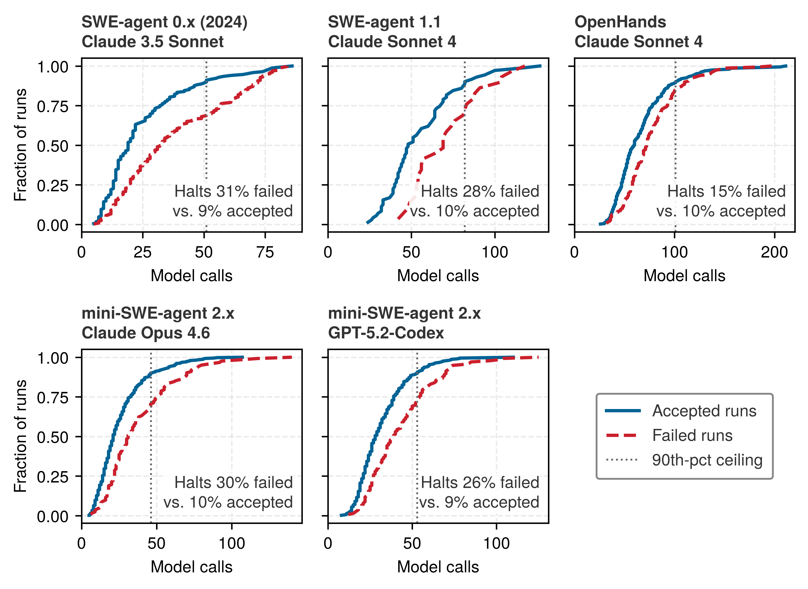
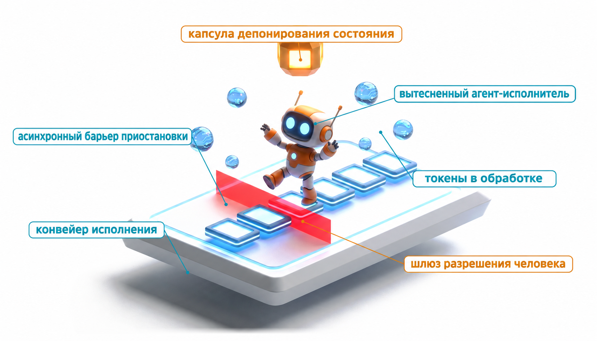
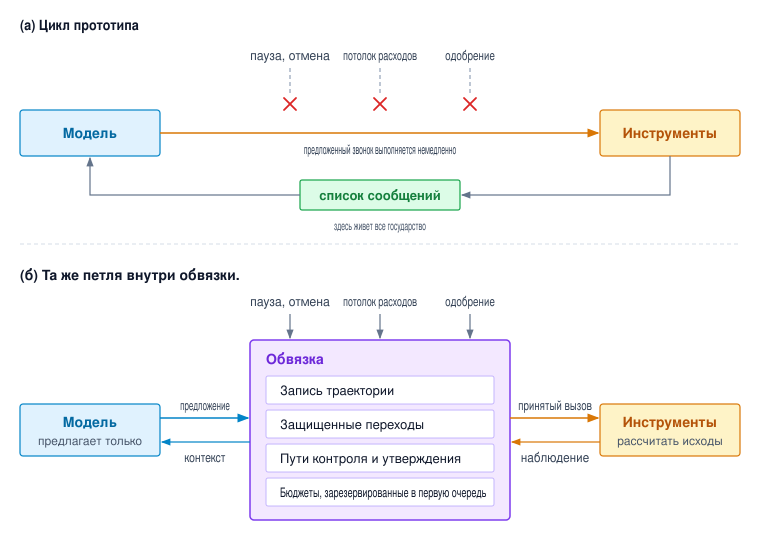
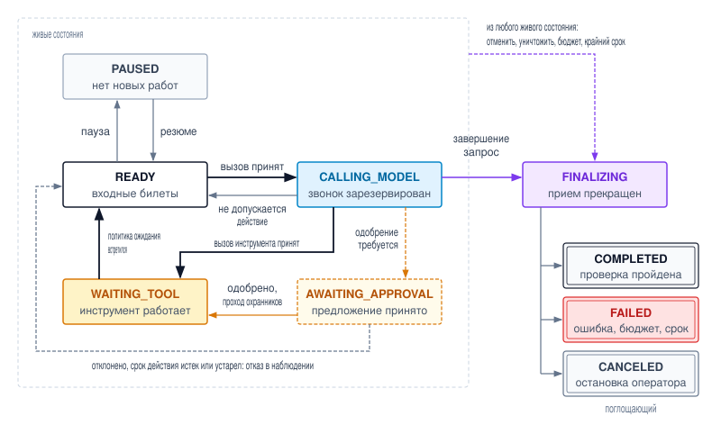
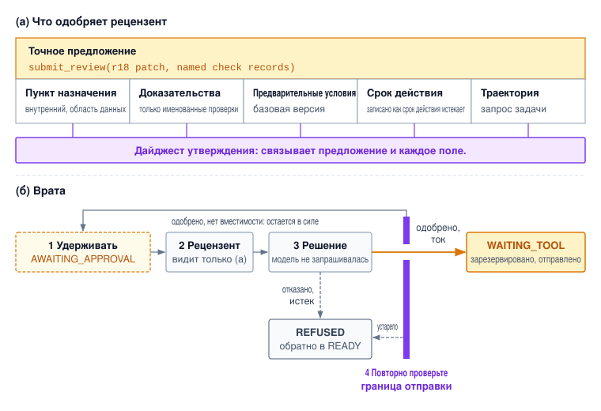
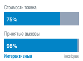
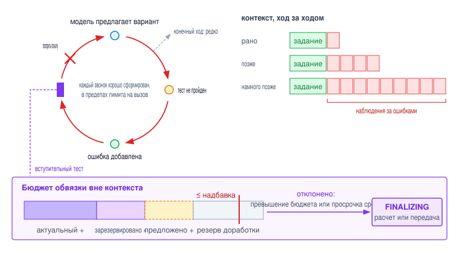
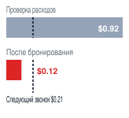
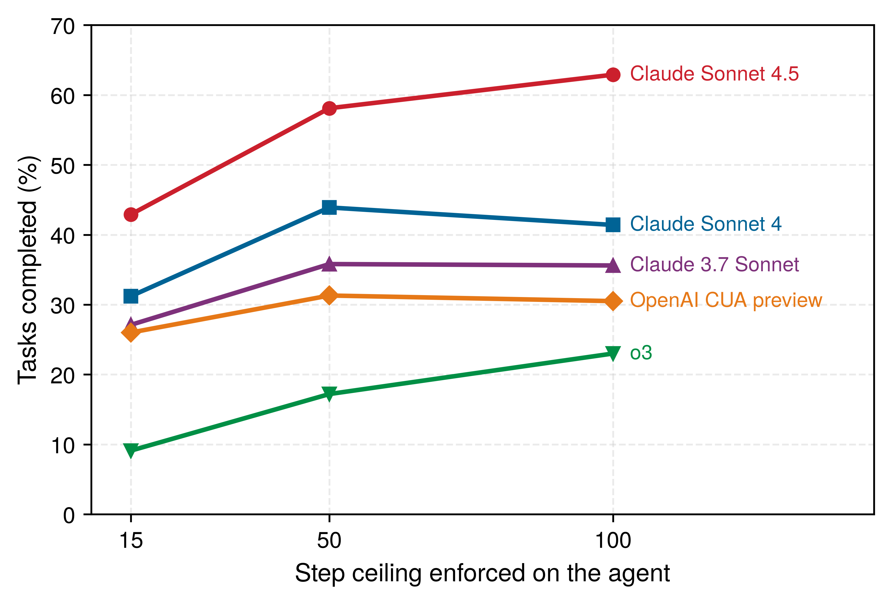
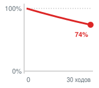

Содержание главы
Содержание
- 10 Каркас агента
- 10.1 Контроль продолжения
- 10.2 Цикл и каркас
- 10.3 Запись траектории
- 10.4 Состояния траектории
- 10.5 Управляющие действия
- 10.6 Контролируемое ожидание
- 10.7 Шлюзы одобрения
- 10.8 Планирование параллельных траекторий
- 10.9 Бюджеты и потолки
- 10.10 Заблуждения и ловушки
- 10.11 Итоги
- 10.12 Исторический контекст и дополнительная литература
- 10.13 Упражнения
10 Каркас агента

Назначение
Почему решение о продолжении работы агента должно приниматься вне модели, которая предлагает следующий шаг?
Одиночный вызов модели завершается успехом или неудачей сам по себе, но автономный агент работает на горизонте из множества ходов, и ошибки каждого шага накапливаются с каждым ходом. За десятки последовательных взаимодействий с инструментами некорректный вызов, устаревшее наблюдение или необработанное исключение могут увести неподконтрольную траекторию к отказу или циклу, который не виден ни на одном отдельном шаге. Каркас агента (agent harness) — это компонент среды исполнения, который владеет этим циклом: он планирует вызовы модели, обеспечивает правила переходов между состояниями, следит за бюджетами задачи и удерживает чувствительные действия до одобрения человеком. Модель можно попросить сделать паузу, подождать или не выходить за лимит, но запрос, который она выполняет почти на каждом ходу, всё равно нарушится на длинном прогоне, поэтому решение о продолжении должно принадлежать детерминированному контролю вне модели. Инженерия каркаса превращает стохастическую генерацию токенов в исполнение задачи, которое остаётся ограниченным, прерываемым и подотчётным на всём горизонте.
Цели обучения
- Объяснить, почему решение о продолжении принимается вне модели, и спроектировать принадлежащую среде исполнения запись траектории: планы, разрешения, потребление и обязательства
- Построить защищённые переходы состояний, которые не пропускают устаревшие наблюдения в следующий ход, сохраняя при этом незавершённые эффекты
- Рассчитать, сколько запрос управления ждёт границы хода, и применять паузу, отмену или завершение без отправки неполного вывода
- Объяснить, какие ресурсы освобождает асинхронное ожидание и какими траектория продолжает владеть и платить
- Спроектировать шлюз одобрения со сроком истечения и повторными проверками при отправке, а также оценить ресурсы, которые удерживают его приостановленные траектории
- Распределять общий сервис вызовов модели взвешенным deficit round-robin, разделяя квоты провайдера и бюджеты траекторий
- Применять допуск с ограниченной ответственностью по бюджетам траектории — ходам, токенам, времени и деньгам, — и выбирать потолок по стоимости за принятую задачу
10.1 Контроль продолжения

Подверженность горизонту, ограниченная каркасом, который удерживает управление вне модели.
Рассмотрим агента по починке пула соединений (Четыре маяка — рабочие нагрузки) в момент, когда он формирует кандидат-патч r18. Тестовая задача активно выполняется по фиксированному снимку этой ревизии, когда оператор запрашивает паузу для ручной проверки. Одновременно независимая интерактивная задача встаёт в очередь на сервис модели, а траектория ремонта приближается к выделенному бюджету. Даже если тестовая задача завершится чисто, а следующий ответ модели будет синтаксически безупречен, ни одно из этих событий не отвечает на вопрос, следует ли ремонту продолжаться прямо сейчас. Это решение о продолжении зависит от операционных условий вне модели: ожидающего сигнала оператора, текущих состояний задач, общей ёмкости кластера и остатка лимита с учётом уже выполняемой работы.
Рассмотренные ранее компоненты среды исполнения каждый решает часть этой операционной среды. Слой инструментов отслеживает дескрипторы задач и контракты повторения операций, песочница изолирует исполнение и ограничивает время жизни рабочих пространств, а проверки безопасности сверяют каждую отправку с метками конфиденциальности и происхождения и привязывают каждое одобрение к точному действию, которое оно покрывает. Однако каждый из этих механизмов работает на границе отдельного вызова, ресурса или решения; ни один не обладает контекстом и полномочиями, чтобы решать, может ли траектория в целом сделать следующий шаг. Это решение нельзя делегировать и модели. Агент, которому поручено саморегулирование (делать паузу по запросу или останавливаться перед превышением лимита), заново оценивает это правило на каждом ходу. Из-за накопления на горизонте (Уравнение (1)) даже высокий уровень соблюдения на каждом ходу деградирует на протяжённом прогоне, поэтому ограничение, которое модель соблюдает почти на каждом ходу, всё равно нарушается в предсказуемой доле длинных траекторий. Операционному контролю нужно также состояние, которое не может жить в эфемерном окне контекста. Оператору нужен немедленный статус без реконструкции транскрипта разговора; планировщик должен отличать работу, ждущую фоновых задач, от работы, готовой к запуску; а путь отправки должен проверять разрешения безопасности и лимиты токенов до вызова внешних инструментов. Все три операции требуют единой авторитетной учётной записи траектории, которую неструктурированный список сообщений обеспечить не может.
Каркас агента предоставляет этот недостающий надзирающий слой, беря на себя владение циклом исполнения отдельной траектории. Агент предлагает кандидатные действия; каркас определяет, выполняется ли каждый шаг немедленно, уступает ли он место другой работе или останавливается, и проводит эти решения в жизнь через запись исполнения, которую может изменять только среда исполнения. Это инкапсуляция на уровне траектории (принцип «Инкапсуляция уровня траектории»). Среда исполнения управляет каждым вызовом модели как одним шагом целой траектории, и траектория продвигается только через переходы и допуски, которые разрешают её защитные проверки. Причина в том, что траекторию нельзя заставить уступить, остановиться или заметить, что она перестала двигаться к цели. Замыкание инвариантов (принцип 1) утверждает, что границы принадлежат уровню ниже модели; этот принцип называет единицу, которую эти границы должны покрывать, — всю траекторию, а не отдельный вызов. В каркасе принцип принимает форму двух рабочих правил. Во-первых, каждый исходящий вызов модели или отправка инструмента должны пройти явную проверку допуска (активные сигналы оператора, предоставленные полномочия, общая ёмкость и остаток бюджета) в момент, когда они должны выполниться. Во-вторых, выполняемая работа остаётся подотчётной: ни сигнал паузы, ни тайм-аут, ни отмена не доказывают, что запущенная работа остановилась или что её стоимость оплачена, поэтому каждая незавершённая операция сохраняет именованного владельца, пока свидетельство не урегулирует её.
Описанная в этой главе запись живёт в памяти хоста, а задача сделать её гарантии переживающими отказ хоста — это работа долговременного исполнения (Долговременное исполнение). Внутри живого хоста каркас развивается в порядке возникновения этих надзирающих решений в ходе ремонта: отделение контурного управления от голого цикла исполнения (Глава 10.2), ведение авторитетной учётной записи траектории (Глава 10.3) и принуждение защищённых правил изменения этой записи (Глава 10.4). Затем операторам нужен способ остановить или перенаправить активную работу (Глава 10.5), а долгим задачам инструментов и человеческим проверкам нужны ожидания, сохраняющие надзор (Глава 10.6, Глава 10.7). Для конкурентных траекторий общий сервис вызовов модели должен делиться справедливо (Глава 10.8), а для множества ходов накопленное потребление должно быть ограничено (Глава 10.9). Понимание того, почему эти гарантии требуют отдельного компонента среды исполнения, начинается с того, что ломается, когда ход ремонта r18 выполняется внутри неуправляемого цикла.
10.2 Цикл и каркас
Когда агент ремонта r18 работает внутри голого цикла исполнения, пауза оператора во время тестового набора или неконтролируемый цикл повторов немедленно обнажают отсутствие внешнего контура управления. Контур управления — это путь, отдельный от пути, выполняющего вызовы модели и работу инструментов, который решает, может ли эта работа продолжаться. Неуправляемый цикл трактует дополнения модели как прямые инструкции к исполнению; каркас трактует их как недоверенные предложения, проверяя каждое действие на явных политиках допуска, бюджетных ограничениях и внешних надзирающих сигналах.
10.2.1 Анатомия неуправляемого цикла
Неопосредованный цикл while из Листинг — паттерн, который до сих пор используют большинство прототипных агентов, популяризированный ReAct (Yao и др. 2023 г.): вызвать фундаментальную модель, отправить инструменты, запрошенные в её дополнении, дописать результаты в историю сообщений и повторять, пока модель не выдаст условие остановки. Один ход охватывает шесть фаз — от сборки контекста до оценки по контракту задачи, — и несколько из этих фаз должны ждать внешних инструментов или человеческих проверяющих. Чего прототипному циклу не хватает для промышленной эксплуатации, так это места, где могли бы жить решения этих фаз, поскольку он замыкает всё операционное состояние в списке сообщений и локальном стеке вызовов клиентского процесса.
↩︎ Шестифазный жизненный цикл хода, включая фазы, приостанавливающие ход ради инструментов и одобрений, установлен в Шесть фаз хода.
Замыкание состояния управления в списке сообщений и стеке вызовов оставляет три операционных пути без места для реализации. Когда оператор пытается приостановить прогон во время долгого тестового набора, у среды исполнения нет интерфейса, чтобы получить команду. Когда накопленное потребление токенов исчерпывает выделенный бюджет, цикл не может удержать следующий вызов модели иначе как резким завершением с оставлением незавершённой работы. Когда модель предлагает вызов инструмента, он немедленно исполняется с окружающими полномочиями, без проверок политики или человеческого рассмотрения. Хотя надзираемый каркас тоже может исполняться как цикл или сопрограмма, он оборачивает этот цикл в явный конечный автомат, чьи защитные условия управляют каждым путём продолжения, фильтруя каждое предложение до того, как какой-либо вызов инструмента будет допущен (Рисунок 1).

В неуправляемой системе контекст исполнения разбросан по разным подсистемам: хостовые операционные системы отслеживают локальные процессы, удалённые кластеры держат дескрипторы асинхронных задач, системы хранения управляют арендой рабочих пространств, а провайдеры идентификации отслеживают истечение учётных данных. Панель (b) консолидирует эти обязанности в единую принадлежащую среде исполнения запись для каждой траектории. Операторы, планировщики кластера и пути отправки сверяются с этой авторитетной записью перед инициированием изменений состояния. Хотя система может передавать бюджетные ограничения модели в промпте, и модель может сотрудничать с запросами на паузу, фактическое принуждение остаётся строго за средой исполнения. Полагаться на сотрудничество модели — значит нарушать замыкание инвариантов; сама среда исполнения должна гарантировать соблюдение системных инвариантов безопасности на всех путях исполнения (принцип 1).
Определение 10.1: Каркас агента
Каркас агента (agent harness) — это компонент среды исполнения, который владеет циклом агента для одной траектории: собирает каждый вызов модели, интерпретирует ответ, решает, должен ли и когда каждый предложенный вызов инструмента быть отправлен, и ведёт запись, через которую внешние компоненты могут инспектировать, приостанавливать, ограничивать или останавливать продолжение.
- Значимость: Он делает решения о продолжении независимыми от сотрудничества модели, сохраняя при этом полномочия, потребление и незавершённую работу, которые эти решения должны учитывать.
- Отличие: Слой инструментов посредничает в вызовах и отслеживает их исходы, а песочница ограничивает исполнение своей политикой. Каркас сочетает эти механизмы с запросами управления, ожиданием, планированием и бюджетами времени жизни.
- Типичная ошибка: Хранить статус и ожидающие обязательства только в тексте промпта или недоступном локальном для исполнения состоянии, так что отдельный контур управления не может их инспектировать или предотвратить дальнейшую отправку.
10.2.2 Один ход под надзором
За один ход рабочего процесса ремонта r18 каркас посредничает на каждом шаге — от момента, когда траектория становится готова к следующему вызову модели, через предложение модели запустить регрессионный тест против кандидата r18, до паузы оператора и последующего возобновления (Таблица 1). На протяжении этого хода состояния жизненного цикла фиксируют, готова ли траектория к продолжению (READY), активно запрашивает ли модель (CALLING_MODEL), ждёт ли завершения инструмента (WAITING_TOOL) или приостановлена оператором (PAUSED).
| Событие | Решение каркаса и зафиксированное обязательство |
|---|---|
| Ремонту доступен следующий вызов модели | Из READY подтвердить, что нет ожидающего запроса оператора, что общая ёмкость модели доступна и что бюджет покрывает максимум, который этот вызов может стоить. Зарезервировать эту сумму, затем перейти в CALLING_MODEL и отправить вызов |
Полный ответ предлагает тест r18 |
Зафиксировать, что вызов реально израсходовал. Проверить предложенный тест против разрешений задачи и остатка бюджета, зарезервировать максимальную стоимость теста и зафиксировать тест как запущенный до его отправки. Перейти в WAITING_TOOL |
| Оператор запрашивает паузу, пока идёт тест | Прекратить допуск новой работы. Продолжать отслеживать запущенный тест и его стоимость, но больше не позволять его результату перезапускать модель; затем пройти через READY в PAUSED без единого момента, когда новая работа могла бы начаться |
| Результат теста приходит во время паузы | Подтвердить, что результат подлинный и относится именно к этому тесту r18. Зафиксировать его исход и стоимость, но оставить траекторию приостановленной и контекст модели неизменным |
| Оператор запрашивает возобновление | Перепроверить состояние задачи, разрешения, зафиксированные свидетельства и бюджет перед возвратом в READY. После этого планировщик может допустить новый вызов; результат подтверждает только тот тест и ту ревизию, которые он реально проверил |
Три особенности этой трассы повторяются в остальной части главы. Во-первых, каждая строка, допускающая работу, резервирует до отправки. Доступность по бюджету нельзя судить только по урегулированным начислениям, потому что запущенная тестовая задача может ещё выставить счёт, а предложенный вызов может сгенерировать вплоть до полного лимита вывода. Поэтому каркас резервирует максимальную ответственность каждой операции при допуске и сверяет заявленное потребление после факта. В ноутбуке 10.2 позже оценивается вызов, который проверка урегулированных расходов допустила бы, а тест резервирования отклоняет. Во-вторых, пауза и результат теста — независимые события. Пауза прекращает новый допуск, не останавливая задачу, а результат задачи урегулирует её незавершённое начисление, не возобновляя ход. В-третьих, содержимое ответа никогда не действует само по себе. Усечённый или отменённый ответ не даёт ничего к отправке, заявление о завершении запускает независимую проверку, а не завершает задачу, и действие, которое политика требует рассмотреть человеку, ждёт в отдельном удержании со своим сроком истечения. Каждая из этих особенностей требует состояния среды исполнения, которого нет у списка сообщений.
Траектория также разделяет решение о продолжении и ресурсы, которыми агент владеет. Пока траектория ремонта находится в состояниях PAUSED или WAITING_TOOL, она сохраняет своё рабочее пространство, кэшированное состояние репозитория и запущенный тестовый job, но не удерживает поток-обработчик и место в очереди для вызовов модели. Поскольку решение о том, когда траектория в следующий раз обратится к модели, принимает каркас, а не цикл ремонта, интерактивная траектория может занять следующий слот для вызова модели, не дожидаясь, пока ремонт освободит его. Какие ресурсы освобождаются при ожидании, а какие сохраняются — предмет раздела об управляемом ожидании (Глава 10.6); как вызовы модели распределяются между траекториями — предмет раздела о планировании (Глава 10.8). Однако прежде чем каркас сможет принуждать к каким-либо из этих переходов, ожиданий или расписаний, ему нужна авторитетная структура данных, в которой хранится это операционное состояние.
10.3 Запись траектории
Когда оператор отправляет запрос на паузу, транскрипт разговора не может ответить на вопросы, которые каркас обязан разрешить. Транскрипт фиксирует, что сказал пользователь и модель, но для принятия решений во время исполнения требуется знать состояние базовой системы. В частности, каркас должен знать, какая версия-кандидат находится на тестировании, завершился ли фоновый job валидации, сколько бюджета на вычисления остаётся с учётом всех необработанных асинхронных задач и имеются ли ещё незавершённые внешние побочные эффекты. Одновременно планировщик кластера должен отличать траекторию, заблокированную на исполнении контейнера, от траектории, активно ожидающей своего следующего хода инференса. Ни один из этих операционных фактов не принадлежит промпту. Их разрешение требует управляющего состояния, принадлежащего среде исполнения и доступного каркасу для непосредственной инспекции, изменения и принуждения — без опоры на базовую модель, которая должна была бы восстанавливать собственную историю исполнения.
Определение 10.2: Запись траектории
Запись траектории — это принадлежащее каркасу и поддерживаемое им управляющее состояние отдельной траектории. Она инкапсулирует идентичность и объём задачи, состояние жизненного цикла, лимиты ресурсов и финансовую отчётность, права безопасности и аренду рабочих пространств, необработанные асинхронные операции, а также ссылки на промпт-контекст, живой план исполнения, контейнерные окружения и верифицированные свидетельства.
- Значимость: она предоставляет каркасу авторитетную централизованную структуру для инспекции и управления всей траекторией, отслеживая потребление ресурсов, необработанные асинхронные операции и права безопасности между вызовами инференса.
- Отличие: если транскрипт разговора фиксирует обмен сообщениями между пользователем и моделью, то запись траектории отслеживает операционное состояние, необходимое для управления исполнением на протяжении нескольких ходов. Живая запись в памяти представляет активное управляющее состояние, но не является долговременным журналом аудита и не доказывает, что внешние утверждения верифицированы.
- Типичная ошибка: считать сгенерированный моделью текст или самоотчёт о прогрессе авторитетным обновлением израсходованного бюджета, выданных возможностей, результатов исполнения инструментов или завершённости задачи.
Таблица 2 организует эти поля по надзорным решениям, которые они поддерживают. Таблица представляет собой логическую схему. Распределённая среда исполнения может разделять группы полей по разным хранилищам, например удерживая эфемерные ссылки на контекст в памяти, а учёт затрат — во внешнем хранилище, при условии, что каждая группа сохраняет единственного авторитетного писца и чётко определённый протокол обновления.
| Группа полей | Содержимое | Надзорное назначение |
|---|---|---|
| Идентичность и задача | Траектория, запрашивающая сторона, тенант, необязательный родитель, контракт задачи и версия | Привязывать запросы и начисления к правильной задаче и полномочиям |
| Управление | state, record_version, control_epoch, pending_control, причина выхода |
Решать, является ли продолжение или изменение состояния актуальным и допустимым |
| Продолжение | Ссылка на контекст и версия, ссылка на живой план и ревизия, рабочее пространство кандидата и ссылки на свидетельства | Собирать следующий вызов из целевого состояния задачи |
| Лимиты и учёт | Лимиты на вызов, actual_consumption, outstanding_reservations, finalization_reserve и deadline |
Проверять новую задолженность против остатка разрешённого и резервировать средства для финальной работы |
| Полномочия и ресурсы | Текущие права, аренда рабочих пространств, ссылки на брокер учётных данных, владельцы ресурсов | Проверять доступные операции и выявлять ресурсы, требующие освобождения или передачи |
| Текущий вызов и наблюдения | current_model_call, observation_eligible_calls, идентификаторы попыток, дескрипторы job, дедлайны и ожидаемые версии |
Соотносить события и решать, какие из них могут информировать текущее продолжение |
| Удержанное согласование | held_approval: точная ссылка на предложение, применимые версии задачи и плана, статус и срок согласования |
Удерживать предложенное действие неотправленным, пока его решение не принято |
| Неисполненные обязательства | Ссылка на operation_table, неразрешённые исходы и начисления, владелец расчёта |
Сохранять ответственность после тайм-аута, ревизии плана, паузы или выхода при планировании |
Два вопроса о работающей операции должны решаться по отдельности: может ли её результат ещё информировать модель, и должен ли ещё каркас что-то за неё. Первое — это право на наблюдение, определяющее, разрешено ли выводу операции попасть в промпт-контекст для следующего вызова модели. Второе — неисполненное обязательство, и эти две вещи могут расходиться. Вызов инструмента может утратить право на наблюдение (когда шаг вызова выходит за тайм-аут или пользователь отменяет подзадачу), даже если удалённое исполнение продолжает работать в контейнере бэкенда. Чтобы предотвратить осиротевшие побочные эффекты и утечки ресурсов, таблица операций отслеживает каждую логическую операцию на протяжении всего её жизненного цикла: транспортные повторы, входящие свидетельства исполнения и конкретную подсистему, ответственную за финальный расчёт.
Запись траектории управляет этим жизненным циклом через два счётчика версий. Пока record_version увеличивается при каждой сериализованной записи, обеспечивая оптимистичную блокировку, эпоха управления (control_epoch) отслеживает конкретный цикл планирования и вызовов, по которому валидируются предложения и наблюдения. Эпоха не сдвигается на каждом ходу; она сдвигается, когда каркас отзывает у продолжения притязание на необработанные результаты — как при истечении дедлайна ожидания, вмешательстве оператора или ревизии плана, отменяющей ожидающую работу. Каждый вызов записывает эпоху, актуальную на момент его регистрации, поэтому обычный результат из отправки этого хода всё ещё совпадает. Увеличение эпохи аннулирует незавершённые наблюдения, зарегистрированные под прежней эпохой, не нарушая контракт идемпотентности самой операции. В результате каркас продолжает отслеживать фоновые задачи и их внешние побочные эффекты даже после того, как агент перестал ожидать их непосредственного вывода.
↩︎ Контракт идемпотентности операций и семантика повторов установлены в Повторение неопределённых действий.
Параллельная дисциплина управляет учётом ресурсов. Каркас разделяет состоявшееся потребление (actual_consumption) и предварительные распределения (outstanding_reservations), представляющие допущенные операции, вычислительные или финансовые издержки которых ещё не финализированы. Каркас резервирует отдельный резерв финализации из общих исследовательских шагов. Этот резерв гарантирует, что среда исполнения сохранит достаточный бюджет для выполнения обязательных задач очистки, освобождения песочниц и прогона детерминированных наборов верификации перед завершением траектории. Дедлайны по астрономическому времени действуют независимо от лимитов токенов, поскольку ожидание удалённых контейнеров или людей-ревьюеров потребляет реальное время, даже когда генерация токенов простаивает. Глава 10.9 формализует этот тест допущения; запись траектории предоставляет живые метрики, необходимые для его применения.
Эти гарантии жизненного цикла и учёта объединяются в одном рабочем правиле — правиле расчёта. Это траекторная форма принципа «расчёт до повтора» (принцип «Урегулирование до повтора»). Тот принцип гласит, что тайм-аут не устанавливает, произошёл ли эффект, поэтому слепой повтор небезопасен; правило расчёта добавляет, что потеря интереса к результату также не снимает начисление за эффект и его владельца. По этому правилу отзыв у операции права на наблюдение — будь то тайм-аут, ревизия плана, пауза оператора или отмена траектории — никогда не удаляет операцию из таблицы операций и не освобождает её резерв бюджета. Только аутентифицированные, коррелированные свидетельства могут рассчитать исход, подтвердить завершение или освободить зарезервированный бюджет. Пока это доказательство не поступило, неисполненное обязательство сохраняет назначенного владельца расчёта, ответственного за сверку его итогового состояния.
10.3.2 Живой план
Как только агент ремонта генерирует кандидата r18 и отправляет целевой unit-тест в фоновом контейнере, состояние работы больше нельзя представить статическим графом кандидата или чек-листом в тексте промпта. Он не может разделить правку, породившую r18, тест, который сейчас идёт по этой ревизии, и более широкий интеграционный набор, всё ещё ожидающий результата теста. Поэтому исполнение в среде исполнения требует живого плана — ориентированного ациклического графа шагов исполнения, упорядоченного по зависимостям, который явно разделяет предложенные действия, операции, находящиеся в полёте, и уже верифицированные свидетельства. Каждый шаг плана определяет уникальный идентификатор, явные шаги-предпосылки или зависимости от свидетельств, целевой артефакт-кандидат и условия работы, к которым он применяется, а также текущий статус исполнения. Когда каркас допускает шаг, он привязывает этот шаг непосредственно к записи в таблице операций. Когда шаг завершается, каркас связывает его с неизменяемыми свидетельствами, подтверждающими это завершение, — никогда с неверифицированной галочкой в тексте модели.
⇄ Сопоставление: ревизируемый план-кандидат, установленный в Пересмотр планов кандидатов, отслеживает только неисполненные операции-кандидаты и их подтверждающие свидетельства; живой план также фиксирует операции в полёте.
Пока тестовый раннер исполняется в своём фоновом контейнере, живой план помечает шаг как находящийся в полёте, а не оптимистично предполагает успех. Когда раннер завершится, статус «пройдено» подтвердит только этот целевой тест против кандидата r18 при тех же флагах контейнера; оставшиеся шаги верификации и финальные критерии приёмки остаются невыполненными. Запрос оператора на паузу, поступивший посреди теста, действует как независимое надзорное событие, прерывающее дальнейшую отправку без порчи исторических входов или валидности идущего исполнения теста.
Когда входящие наблюдения показывают, что стратегия терпит неудачу, модель может предложить ревизию плана, меняющую последующие задачи. Прежде чем принять любую ревизию плана, каркас валидирует её по общему контракту задачи, текущим зависимостям от свидетельств, остатку бюджета и правам безопасности. Принятие ревизии сдвигает счётчик ревизий плана и аннулирует ожидающие неотправленные предложения и удержанные согласования, чьи исходные предположения изменились. Существующие верифицированные свидетельства остаются действительными на их исходных условиях работы. Каркас синхронизирует принятие плана с диспетчером инструментов, чтобы предотвратить гонки, при которых устаревшее предложение могло бы пройти проверку допущения против отменённого плана.
Теперь рассмотрим, что произойдёт, если ревизия плана изменит исходный код, пока целевой тест кандидата r18 всё ещё идёт в фоне. Активный job в контейнере тестирует кандидата r18, а не новую ревизию. Перемаркировка шага в плане не может превратить будущие результаты этого теста в свидетельства для изменённого кода. Удаление шага из плана также не прерывает удалённый job, не обращает его внешние побочные эффекты и не возвращает автоматически резерв вычислений. Вместо этого каркас сохраняет активную операцию в таблице операций под её исходным владельцем расчёта, блокирует последующие шаги, чьи предпосылки более не выполнены, и оценивает замещающую работу через свежую проверку допущения. Отмена внешнего эффекта требует компенсации — последующего действия, которое нейтрализует предыдущее (Семантическая компенсация), — а не ретроспективной правки текста плана.
Поддерживая явный, отслеживающий зависимости живой план, запись траектории разграничивает: что агент предложил, что каркас допустил на плоскость исполнения и какие обязательства остаются неисполненными. Следовательно, каркас должен управлять тем, как эта запись эволюционирует, чтобы она оставалась согласованной между параллельными событиями инструментов, асинхронными обратными вызовами воркеров и вмешательствами оператора. Он делает это, связывая все изменения жизненного цикла с формальными, защищёнными переходами состояний.
10.4 Состояния траектории
Согласованность записи траектории при асинхронных обратных вызовах и тайм-аутах становится критической, когда результат инструмента прибывает после того, как ход, запросивший его, уже продвинулся дальше. Пусть дедлайн ожидания тестового набора кандидата r18 истёк до прибытия результата, поэтому каркас фиксирует исход как неизвестный и идёт дальше; минуту спустя тестовый сервис возвращает отчёт об успехе. Оба утверждения отражают реальность: исход действительно был неизвестен в момент истечения дедлайна, а тесты в итоге прошли. Сбой происходит, если каркас встраивает этот поздний результат в устаревший ход, как будто модель уже обладала этим свидетельством при выборе следующего действия. Этот дефект, известный как пересечение наблюдений, смешивает асинхронную физическую историю операции с каузальными свидетельствами, допущенными к конкретному продолжению. Его предотвращение требует двух механизмов: защищённых переходов, решающих, когда продолжение может продвинуться, и ограждения эпохой, решающего, какие поздние результаты всё ещё могут его информировать (Глава 10.4.2).
Автомат состояний с защищёнными переходами1 делает каждое такое допущение явным. Помимо разрешения гонок наблюдений, защищённые переходы предотвращают аномалии планирования, например ошибочное принятие траектории, удержанной для согласования человеком, за простаивающую с последующей ошибочной отправкой ещё одного вызова модели. Все переходы состояний управляет плоскость управления среды исполнения, а не сгенерированный моделью вывод. Таблица 3 определяет эту надзорную машину состояний, организованную вокруг пяти живых состояний, одного финализирующего состояния, через которое обязан пройти каждый выход, и трёх терминальных поглощающих исходов.
| Состояние | Значение | Допустимые следующие состояния |
|---|---|---|
READY |
Может рассматриваться для следующего вызова модели; защиты допуска по-прежнему применяются. | CALLING_MODEL, PAUSED, FINALIZING |
CALLING_MODEL |
Для текущей продолжения зарегистрирован вызов модели. | READY, WAITING_TOOL, AWAITING_APPROVAL, FINALIZING |
WAITING_TOOL |
Продолжение ожидает объявленный набор или батч наблюдений от инструментов. | READY, FINALIZING |
AWAITING_APPROVAL |
Точное предложенное действие удерживается; статус одобрения и готовность к отправке не определены. | WAITING_TOOL, READY, FINALIZING |
PAUSED |
Продолжение остановлено на локальной границе; новая работа модели или инструментов не допускается. | READY, FINALIZING |
FINALIZING |
Среда исполнения проверяет исход выхода и разрешает или передаёт оставшиеся обязательства. | COMPLETED, FAILED, CANCELED |
COMPLETED, FAILED, CANCELED |
Продолжение завершено; сохранённые доказательства и назначенные обязательства могут оставаться. | None |
Нормальный рабочий цикл следует по пути READY → CALLING_MODEL → WAITING_TOOL → READY, проходя через пять активных состояний и защищённые переходы, показанные на Рисунок 2. Предложения, требующие проверки, отклоняются в AWAITING_APPROVAL. Команды паузы переводят в PAUSED исключительно из READY. Все триггеры завершения (запросы на завершение, отмены или исчерпанные бюджеты) проходят через FINALIZING, прежде чем достигнуть поглощающих терминальных состояний (COMPLETED, FAILED, CANCELED). Во время исполнения ответ модели может не содержать допустимого действия, запросить завершение задачи или предложить действие, требующее одобрения оператора. Пока нормализованный статус вызова, определённый в Таблица 2, задаёт то, как среда исполнения обрабатывает отдельные исходы вызовов, Таблица 4 определяет, как каждый исход сдвигает состояние всей траектории. Два имени встречаются в обоих словарях с разными значениями: статус ответа COMPLETED или CANCELED описывает один вызов модели, а терминальные состояния с теми же именами описывают всю траекторию. Завершённый ответ заканчивает вызов, а не задачу. Только ответ со статусом COMPLETED переходит к валидации кандидатов-инструментов. Каркас ни при каких условиях не должен превращать искажённый, обрезанный или отменённый частичный поток в исполнимое обращение к инструменту лишь потому, что парсер сумел восстановить частичные аргументы из полезной нагрузки.
| Статус и содержимое ответа | Следующее состояние | Условие или остаток |
|---|---|---|
COMPLETED, проверенное предложение |
WAITING_TOOL |
Как только его отправка допущена |
COMPLETED, предложение на проверке |
AWAITING_APPROVAL |
Когда политика требует проверки точного действия |
COMPLETED, запрос завершения |
FINALIZING |
Далее следует проверка завершения задачи |
COMPLETED, нет допустимого действия |
READY |
С наблюдением, сообщающим об этом |
TRUNCATED, REFUSED, REJECTED |
READY |
С ограниченным наблюдением, если только политика отказа задачи не завершает |
CANCELED |
READY |
Под управляющей задержкой, вызвавшей отмену |
TRANSPORT_FAILURE, FAULTED |
READY |
Для ограниченной обработки сбоев, пока позволяет бюджет; иначе FINALIZING |
Одобрение действий вводит в этот цикл контролируемый обход. Одобренное действие переходит из AWAITING_APPROVAL в WAITING_TOOL только когда проходят его активные защиты отправки; фиксация одобрения оператора не исполняет инструмент автоматически. Напротив, отказ, истечение срока или отзыв оператором порождают наблюдение-отказ и возвращают в READY.

10.4.1 Защиты переходов и проверка допуска
Траектория, находящаяся в READY, всё равно может быть небезопасно продолжать, если пауза оператора пришла миллисекундой раньше, если учётные данные истекли, пока траектория ждала в очереди, или если неразрешённая предыдущая операция всё ещё блокирует зависимое изменение. Прохождение допустимого ребра в машине состояний — таким образом, лишь необходимое условие продвижения, а не безусловное право на исполнение. Прежде чем среда исполнения допустит новую работу — вызов модели или отправку инструмента, — она вычисляет набор предикатов, известный как проверка допуска (admission check): не должно быть активной ожидающей управляющей задержки, контекст, учётные данные и все необходимые одобрения действий должны оставаться действительными, вышестоящие зависимости данных должны быть разрешены, и должны быть подтверждены как запас до крайнего срока, так и ёмкость нижестоящих служб. Среда исполнения должна также зарезервировать ограниченную финансовую ответственность операции из бюджета задачи, не вторгаясь в выделенный резерв завершения (Глава 10.9), а для вызовов инструментов — проверить структурную полноту аргументов. Поскольку состояние системы меняется непрерывно, эта проверка действительна только в момент своего выполнения; одобрение, выданное секундами ранее, или решение планировщика на предыдущем такте не переносятся вперёд.
Проверка допуска и её обновления состояния выполняются как единая атомарная транзакция. Под защитой блокировки записи траектории2 каркас вычисляет предикаты защит, резервирует требуемую ответственность, регистрирует исходящий идентификатор вызова или попытки, помечает ожидаемое наблюдение как допустимое и фиксирует переход состояния. Однако освобождение блокировки записи до сетевой передачи открывает короткое окно перед отправкой байтов с хоста, в котором может зафиксироваться пауза или отмена оператора. Чтобы закрыть это окно, не удерживая блокировку записи на протяжении медленного сетевого ввода-вывода, среда исполнения передаёт допущенный запрос в release gate (шлюз выпуска), который сериализует финальное решение «выпустить или удержать» с управляющими обновлениями. Этот шлюз перепроверяет текущие управления и существующий допуск, не резервируя ответственность дважды, и удерживает передачу, если остановка пришла после освобождения блокировки записи. Вместе эти шаги обеспечивают правило «сначала регистрация — потом отправка» (register-before-send). Регистрация состояния до отправки гарантирует, что даже мгновенный ответ никогда не придёт раньше, чем существует локальная запись, способная его принять. С другой стороны, строго вынесенная за критическую секцию передача запросов не позволяет медленному сетевому вводу-выводу, зависшим конечным точкам инференса или отстающим сервисам инструментов блокировать одновременные управляющие действия, такты планировщика или приходящие результаты других воркеров.
Внешние управляющие запросы захватывают ту же блокировку монитора, поэтому остановки и допуски строго сериализуются согласно правилу порядка допуска (admission-order rule). Если команда паузы, отмены или уничтожения фиксируется до выполнения проверки допуска, она немедленно блокирует новую исходящую работу. Если допуск фиксируется первым, операция становится собственной работой с зарегистрированной идентичностью и резервированием, и последующее управление не может стереть или вернуть это резервирование по одному лишь намерению. Хотя шлюз выпуска всё ещё может удержать заведомо не отправленную попытку, урегулирование этой попытки требует авторитетного свидетельства того, что выпуск не произошёл и удалённой ответственности не осталось. Летучий флаг удержания не переживает сбой хоста, и как только пакет мог покинуть хост, запрос на отмену не может установить not_sent без удалённого свидетельства. Поэтому идемпотентность на стороне инструментов и ограждение устаревших аренд по-прежнему требуют контрактов конечных точек, описанных в Идентичность операций и контракты конечных точек.
Чтобы координировать конкурентный доступ к состоянию без тяжеловесных распределённых блокировок, каркас сочетает оптимистическую проверку параллелизма с ограждением по эпохам (epoch fencing). Поле record_version обнаруживает конкурирующие обновления в момент фиксации, реализуя этап валидации оптимистического управления параллелизмом (Kung и Robinson 1981 г.). Параллельно инкременты control_epoch ограждают от устаревших асинхронных ответов — та же проверка номера поколения, которую слой инструментов применяет к замещённым воркерам на конечной точке. Здесь ограждаемая сторона — наблюдение: ответ, помеченный старой эпохой, не может продвигать текущее продолжение, каким бы корректным он ни был. Эти идентификаторы управляющей плоскости действуют наряду с, а не вместо, логических идентификаторов операций и счётчиков транспортных попыток. Сетевой повтор создаёт новый идентификатор попытки под тем же логическим оператором, тогда как вмешательство оператора наращивает эпоху управления, делая недействительными ожидающие ответы, не стирая запись операции в таблице операций. Теперь запись несёт несколько счётчиков, и каждый продвигается при своих событиях и отвергает свой вид устаревшего ввода (Таблица 5).
↩︎ Ограждение эпохами замещённых воркеров на изменяемом ресурсе установлено в Идентичность операций и контракты конечных точек.
| Счётчик | Когда продвигается | Какой устаревший ввод отвергает |
|---|---|---|
record_version |
Любая зафиксированная правка записи траектории | Решение, принятое по срезу записи, который с тех пор изменился |
control_epoch |
Крайний срок ожидания, вмешательство оператора или пересмотр плана отзывает претензию продолжения на ожидаемые результаты | Результат, зарегистрированный под ранней эпохой, как вход текущего хода |
| Пересмотр плана | Каркас принимает пересмотренный живой план | Предложение или удержанное одобрение, сформированные по замещённому плану |
| Версия удержанного предложения | Каркас фиксирует новое или изменённое удержанное предложение для одобрения (Глава 10.7) | Решение об одобрении для другой версии предложения |
| Идентификатор попытки | Транспортный повтор того же логического оператора | Сам по себе ничего; позволяет запоздавшему свидетельству назвать попытку |
Список 1 выражает эти правила в виде единой надзорной процедуры. Допустимые рёбра соответствуют Таблица 3, а любое ребро без зарегистрированного предиката-защиты отвергается по умолчанию. Вызывающая сторона передаёт record_version, наблюдаемую при формулировании запроса на переход; конкурентная правка другим воркером приводит к провалу проверки версии. Аналогично дублированные доставки события проваливают либо проверку версии, либо защиту ребра, гарантируя, что ни одно действие не будет допущено дважды.
LIVE = {"READY", "CALLING_MODEL", "WAITING_TOOL",
"AWAITING_APPROVAL", "PAUSED"}
LEGAL = {("READY", "CALLING_MODEL"), ("READY", "PAUSED"),
("CALLING_MODEL", "READY"), ("CALLING_MODEL", "WAITING_TOOL"),
("CALLING_MODEL", "AWAITING_APPROVAL"), ("WAITING_TOOL", "READY"),
("AWAITING_APPROVAL", "WAITING_TOOL"),
("AWAITING_APPROVAL", "READY"), ("PAUSED", "READY")}
LEGAL |= {(s, "FINALIZING") for s in LIVE}
LEGAL |= {("FINALIZING", t) for t in ("COMPLETED", "FAILED", "CANCELED")}
# GUARDS maps each edge to a predicate over (record, decision).
def transition(rec, new_state, decision, admit=None):
with rec.lock: # the local decision only
edge = (rec.state, new_state)
guard = GUARDS.get(edge) # no guard, no permission
if edge not in LEGAL or guard is None or not guard(rec, decision):
raise IllegalTransition(edge, decision.id)
if decision.seen_version != rec.record_version:
raise StaleDecision(decision.id) # a competing update won
if admit is not None:
admit(rec) # reserve, register, set eligibility
rec.state = new_state
rec.record_version += 1
rec.history.append((edge, decision.id, rec.record_version))
# The caller passes admitted work to the serialized release gate outside this lock.Здесь защита, зарегистрированная на ребре READY → CALLING_MODEL, выполняет полную проверку допуска, а admit выполняет резервирования ответственности и учёт, требуемые правилом «сначала регистрация — потом отправка». Поскольку блокировка монитора защищает лишь поиск в памяти, обновления состояния и добавление в массив, конкуренция за блокировку остаётся незначительной на фоне сотен миллисекунд, расходуемых удалённым инференсом или исполнением инструментов.
10.4.2 Запоздалые результаты и допуск наблюдений
Когда прибывает асинхронный результат инструмента, каркас должен согласовать финансовое и физическое состояние, не повредив историю промпта активного хода. При получении среда исполнения аутентифицирует полезную нагрузку и сопоставляет её идентификатор задачи, логический идентификатор операции и номер попытки с записью траектории. Несоответствующие или неаутентифицированные сообщения регистрируются для аудита и отбрасываются. Действительные результаты немедленно обновляют таблицу операций траектории: среда исполнения записывает сырые свидетельства исполнения и превращает зарезервированные списания в урегулированное использование ресурсов.
Однако обновление таблицы операций не означает, что результат принадлежит текущему контексту промпта модели. Как показано в Список 2, среда исполнения разделяет входящие свидетельства на два отдельных пути: урегулирование в таблице операций, которое получает каждый аутентичный результат, и постановку наблюдений в очередь под ограждением по эпохам. Каждый аутентичный результат записывает свидетельства и урегулирует подтверждённое использование. Наблюдение же ставится на немедленную инъекцию в промпт, только если его идентификатор вызова остаётся зарегистрированным в observation_eligible_calls и эпоха, записанная вместе с вызовом при регистрации, совпадает с активной control_epoch. Удалённая служба никогда не видит эпоху; сопоставляя результат, каркас находит эпоху по идентификатору вызова и прикрепляет её к локальному конверту результата как result.epoch. Это поле берётся из записи регистрации, а не из удалённой полезной нагрузки. Две проверки проваливаются по-разному. Набор допуска — по-вызовное утверждение того, каких результатов ожидает текущее ожидание, и именно удаление записи после постановки в очередь не даёт повторной доставке быть поставленной в очередь дважды. Эпоха — массовое ограждение: тайм-аут или вмешательство оператора наращивает её единожды и тем самым делает недействительным каждый вызов, зарегистрированный под старой эпохой, включая те, чьё удаление из набора было пропущено. Если операция превысила тайм-аут или вмешался оператор, её записанная эпоха устарела. Каркас урегулирует финансовый баланс, но отказывается инъектировать результат в текущий ход, что устраняет пересечение наблюдений. Если запоздавшее свидетельство окажется релевантным для будущих ходов, среда исполнения может переоценить его и поставить в очередь при последующей защищённой сборке контекста. Постановка результата в очередь сама по себе не завершает ожидание. Объявленная политика ожидания (wait policy) устанавливает критерии, требуемые для возврата из WAITING_TOOL в READY, и обработчик запрашивает этот переход, только когда политика выполнена.
def on_tool_result(rec, result):
if not authenticate(result):
return audit(rec, "unauthenticated_result", result)
with rec.lock:
op = rec.operation_table.get(result.operation_id)
if op is None or result.attempt_id not in op.attempts:
return audit(rec, "unknown_operation", result)
if not op.record_evidence(result): # already recorded: duplicate
return
settle(rec, op, result.usage) # reserved -> actual; rest stays owed
eligible = (result.call_id in rec.observation_eligible_calls
and result.epoch == rec.control_epoch)
if eligible:
rec.observation_eligible_calls.discard(result.call_id)
stage_observation(rec, result) # for the current wait only
rec.record_version += 1
seen = rec.record_version
if eligible and wait_policy_satisfied(rec): # the guard rechecks it
transition(rec, "READY", Decision(result.id, seen))На практике системы реализуют одну из четырёх политик ожидания: прибывают все требуемые результаты, завершается приемлемый частичный батч, истекает срок ожидания либо оператор инициирует явный отзыв. Запись траектории различает подтверждённые свидетельства и вызовы, по которым результата нет или которые не разрешены. В сценарии ремонта кандидата r18 тайм-аут фиксирует лишь то, что на момент истечения срока исход был неизвестен; это не даёт оснований заключать, что тестовый набор провалился. Когда тестовый сервис впоследствии сообщит, что кандидат r18 прошёл тесты, таблица операций зафиксирует этот проверенный исход с его точной областью действия. Точно так же тайм-аут никогда не санкционирует несогласованное повторное исполнение неидемпотентной операции. Зависимые действия по-прежнему должны удовлетворять всем предусловиям предохранителя и соблюдать контракт безопасности мутаций инструмента.
10.4.3 Вход в паузу и незавершённая работа
Если команда паузы приходит, пока траектория находится в CALLING_MODEL или WAITING_TOOL, немедленный переход в PAUSED либо оставил бы «осиротевшим» текущий поток модели и удалённое задание инструмента, либо сделал бы неопределёнными их переходы состояний. Поэтому конечный автомат допускает вход в PAUSED исключительно из READY. Если команда паузы приходит посреди вызова или ожидания, среда исполнения устанавливает удержание pending_control. Это удержание блокирует принятие любой последующей работы, отзывает право на наблюдение у активных потоков модели, инвалидирует ожидающие запросы на подтверждение и завершает активное ожидание наблюдения. Для траектории в WAITING_TOOL это политика явного отзыва ожидания, и именно она обеспечивает шаг WAITING_TOOL → READY. Если того требует политика, управляющая плоскость отправляет запросы на отмену удалённым исполнителям; согласно правилу расчётов, эти операции остаются зарегистрированными в таблице операций до получения подтверждения от удалённой стороны. Любой частичный поток токенов, полученный от отменённого вызова модели, сохраняется исключительно для диагностического журналирования и никогда не склеивается в пригодную к отправке выдачу.
После того как эти локальные отзывы права на наблюдение зафиксированы в журнале, траектория проходит через READY напрямую в PAUSED под уже действующим удержанием приёма. Поскольку блокировка предотвращает параллельное планирование на этом шаге спуска, между переходами не открывается окна, в котором что-то могло бы быть запущено. Вход в PAUSED останавливает продвижение продолжения: ни ожидающие ответы, ни удерживаемые предложения не могут его двигать дальше. Однако фоновые инструменты, уже запущенные во внешних системах, могут продолжать своё физическое исполнение. Например, удалённый тестовый прогон кандидата r18 может завершиться, пока траектория остаётся на паузе; его итоговый payload обновляет таблицу операций и закрывает зарезервированный расход, не запуская новый цикл инференса.
Возобновление исполнения требует охраняемого перехода PAUSED → READY, за которым следует совершенно новая проверка приёма, сверяющая все свидетельства, зафиксированные в таблице операций за время паузы. Возобновление — это не автоматический откат отзывов, сделанных при паузе, поэтому состояние, отозванное во время паузы, никогда не восстанавливается. Истёкшие токены авторизации остаются истёкшими, отозванные подтверждения требуют нового авторизации оператора, а отменённые частичные ответы остаются брошенными. Любая более ранняя операция, остающаяся неподтверждённой, продолжает блокировать свои зависимые действия, даже если несвязанные шаги стали допустимыми. При этом удержание физических ресурсов подчиняется независимым жизненным циклам: аренда песочницы рабочего пространства, выделения буферов, вычислительные резервирования и кэши контекста модели сохраняются или истекают согласно собственным политикам времени жизни, а не мгновенному состоянию траектории.
10.4.4 Финализация и оставшиеся обязанности
Завершить прогон в момент, когда модель заявляет о завершении, оператор отменяет работу или исчерпывается бюджет, — значило бы пропустить независимые проверки приёмки, оставить активными делегированные полномочия и бросить неурегулированные фоновые задания. Поэтому каждый выход из «живых» состояний проходит через FINALIZING, прежде чем достичь терминального состояния (Рисунок 2). При входе в это состояние среда исполнения немедленно приостанавливает стандартный приём работы, фиксирует причину выхода, отзывает неиспользованные полномочия делегирования там, где это поддерживается, и при заявленном завершении запускает проверку завершения задачи. Токен конца хода, выданный моделью, лишь запрашивает эту валидацию; подлинное завершение задачи требует независимой проверки завершения — например, приёмочных тестов контракта задачи, выполняемых вне модели. Все проверки финализации и обязательные процедуры очистки расходуют выделенный, заранее пополненный резерв.
В ходе финализации управляющая плоскость может блокироваться в ожидании отложенных результатов, сообщать о провалах верификации или передавать внешнему супервизору задачи по отмене, сверки счетов и возврату ресурсов. Предохранитель перехода в любое терминальное состояние требует, чтобы каждое незакрытое обязательство было либо окончательно урегулировано, либо явно передано принимающему владельцу выше по цепочке. Удалить неразрешённую задачу из локального набора отслеживания — значит нарушить этот предохранитель. Чтобы передача была легитимной, среда исполнения должна передать полные метаданные (идентификаторы операций, зафиксированные свидетельства и бюджетные резервирования), позволяющие принимающему сервису взять на себя надзорную ответственность.
Все терминальные состояния (COMPLETED, FAILED и CANCELED) строго поглощающие. Как только траектория входит в терминальное состояние, её продолжение завершается навсегда. Поздно прибывающие результаты инструментов или расчёты по расходам ещё могут обновлять архивные исторические записи через назначенного надзорного владельца, но никакое событие не может вернуть продолжение в READY. Возобновление исследования или повторная попытка задачи требуют создания новой траектории с новым идентификатором, связанным с предыдущим прогоном. В этой архитектуре COMPLETED означает лишь то, что выполнены программные критерии завершения, настроенные для каркаса. Демонстрируют ли эти критерии подлинную способность решать задачу — эмпирический вопрос систем, рассматриваемый в Проблема оценки.
Контрольная точка 10.1: Запись траектории и охраняемые состояния
Охраняемые переходы сохраняют причинную согласованность каждого обновления записи в условиях сетевых задержек, тайм-аутов инструментов и конкурентных вмешательств. Однако вход в паузу они описывают только со стороны записи. Оператору, нажимающему паузу, нужно больше: аутентифицированный способ зарегистрировать запрос, ограничение на то, как долго запрос вступает в силу, пока вызов модели ещё генерируется, и различие между паузой, отменой и уничтожением с указанием, кто владеет незавершённой работой в каждом случае.
10.5 Управляющие действия
Тестовое задание для кандидата r18 всё ещё исполняется, когда оператор запрашивает паузу. Каркас должен остановить прямое продвижение цикла ремонта, не потеряв идентификатор отслеживания задания, выделенный бюджетный резерв и диагностические свидетельства, которые оно может вернуть. Отложить паузу до завершения теста — значит лишить оператора интерактивного контроля над потенциально вышедшей из-под контроля работой. Напротив, объявить задание отменённым только потому, что состояние траектории перешло в PAUSED, — значит сфабриковать исход исполнения, который среда исполнения ещё не наблюдала.
Внешнее управление разделяет получение запроса и установление того физического состояния исполнения, которого этот запрос требует. Когда оператор вмешивается, каркас аутентифицирует вызывающего, проверяет полномочия над целевой траекторией и, удерживая блокировку записи, добавляет запрошенную директиву в pending_control. Поскольку это обновление происходит под блокировкой, инварианты упорядочивания приёма, установленные в Глава 10.4, точно определяют, какие операции попадают в область действия запроса. Контроллер подтверждает оператору установление удержания только после того, как обновление зафиксировано в записи (а после внедрения долговременного исполнения — и в его журнале). Ответ, доставляемый оператору, должен также различать три отдельных вехи: запрос получен, новый приём остановлен и последующее подтверждение того, что исполнявшаяся работа завершилась.
10.5.1 Границы приёма и активная генерация
Когда оператор посылает сигнал паузы или отмены, пока агент готовит вызов модели или проходит через батч предложенных вызовов инструментов, каркасу нужны чётко определённые точки, в которых новая работа может быть остановлена до того, как запрос покинет хост. Каждая такая контрольная точка — это граница хода, оцениваемая непосредственно перед отправкой вызова инференса в фундаментальную модель и непосредственно перед вызовом любого внешнего инструмента, включая каждый индивидуально принятый вызов внутри предложенного параллельного батча. Название отмечает, где управление вступает в силу, а не границу между ходами: один ход (один шаг траектории, считаемый через
Локальная обработка кандидатов не обязана ждать завершения удалённой генерации модели. Контракт фундаментальной модели уже разделяет ответ CANCELED и REJECTED и не отправляет ни тот, ни другой; каркас превращает эту отмену в управляющее действие. Он может инициировать отмену потоковой генерации, приказав обслуживающему движку прекратить генерацию текущего ответа: это завершает право вызова produce пригодного к использованию кандидата и сохраняет частичный вывод исключительно для ограниченной диагностики. Отменённый или обрезанный payload никогда не становится отправляемым вызовом — даже если толерантный JSON-парсер закроет его незакрытые скобки, до сигнала отмены появился валидный префикс вызова инструмента или внешне полный ответ придёт после отзыва права. Правило карантина (Нормализованный конверт статуса) — применение замыкания инвариантов (принцип 1) к статусу ответа — действует независимо от того, чем закончился вызов. Поздно прибывающие свидетельства остаются полезными только для сверки учтённого расхода или объяснения того, что исполнил обслуживающий движок.
↩︎ Различие между отклонёнными и отменёнными потоковыми ответами, а также правило о том, что частичный payload никогда не доходит до отправки, установлены в Потоковая передача и отмена.
Лимиты выдачи и настенные часы отвечают на разные операционные риски. Потолок выходных токенов задаёт жёсткую границу на объём генерации в рамках учётного контракта обслуживающего движка; задержка по настенным часам, однако, зависит также от очередей планировщика, сетевых остановок и темпа авторегрессионного декодирования. Даже в идеальных условиях ожидание полного прохода генерации вносит существенную задержку.3 При фиксированном времени декодирования на токен вызов, принятый с лимитом выдачи
При оптимистичной задержке декодирования 21.075 ms на сгенерированный токен нижняя оценка из Оценка аппаратной работы на вызов для одного ускорителя и одного запроса, без очередей и остановок на доступ к памяти, даёт, что лимит в 4,096 токенов откладывает границу примерно на 86.3 s. Логика паузы или отмены, пассивно ожидающая завершения генерации, заблокировалась бы более чем на минуту, а реальные очереди обслуживания только удлиняют ожидание. Узел, раскладывающий веса по нескольким ускорителям, снижает нижнюю границу на токен, но оставляет оценку генерации линейной по
Остановка локального исполнения отличается от завершения удалённого. Хостовый дедлайн определяет, когда супервизор перестаёт ждать и инициирует вмешательство; подтверждение того, что удалённый инференс действительно остановлен, требует позитивного свидетельства от сервиса. Согласно правилу расчётов, не подтверждённое потребление ресурсов остаётся открытым обязательством, а не предполагаемым возвратом средств.
10.5.2 Политика паузы и возобновления
Когда оператор ставит на паузу траекторию ремонта, пока контейнер теста r18 уже исполняется, перевод записи из READY в PAUSED (Глава 10.4) останавливает новый приём работы, но оставляет свободу политики относительно самого выполняющегося задания. Одна политика паузы позволяет активному тесту r18 завершиться в рамках его существующих бюджетных лимитов, удерживая продолжение цикла ремонта; другая запрашивает немедленную отмену и фиксирует тот исход, который подтвердит исполнитель. Политика паузы, допускающая продолжение исполнения, оставляет рабочее пространство живым и изменяемым, и интерфейс оператора должен отражать это активное состояние. Любая административная инспекция, требующая покоя, нуждается в позитивном подтверждении, что все конкурентные писатели остановились, либо в изолированном снимке, сделанном на объявленной границе. Когда оператор возобновляет траекторию, исполнение идёт по охраняемым переходам, определённым в Глава 10.4; политика паузы определяет лишь то, что исполнялось во время удержания, не изменяя инвариантов, действующих после возобновления. Таблица 6 сопоставляет эти запрошенные изменения с продолжением.
| Запрос | Требуемый управляющий эффект | Охраняемый исход |
|---|---|---|
| Отмена | Приостановить новый допуск; запросить отмену и учесть принадлежащую агенту работу | FINALIZING, затем зафиксированный исход отмены, если финализация это позволяет |
| Прерывание новыми инструкциями | Приостановить затронутые предложения; проверить инструкцию и пересмотреть зависимости её задачи | READY только если пересмотренное продолжение допущено |
| Пауза | Приостановить продолжение и сохранить владельца для незавершённой работы | READY в PAUSED без запускаемого разрыва |
| Возобновление | Сверить доказательства и повторно проверить текущие разрешения и лимиты | PAUSED в READY либо остаётся на удержании, если охранные условия не выполнены |
| Kill | Остановить допуск и применить доступное принуждение к активной работе | FINALIZING с зафиксированными подтверждёнными и неразрешёнными исходами |
| Остановка по бюджету или сроку | Запретить дальнейший обычный допуск; сохранить оплаченные обязанности финализации | FINALIZING с причиной остановки и оставшимися обязательствами |
Средняя корректировка траектории пользователем требует той же транзакционной дисциплины. Если оператор вводит управляющую инструкцию, например указание агенту изменить другой целевой файл, каркас не может просто добавить промпт в контекст диалога и рассчитывать, что уже идущие операции подстроятся. Добавление инструкций не делает задним числом недействительной уже допущенную правку файла и не отзывает действующее одобрение инструмента. Вместо этого каркас фиксирует инструкцию, определяет, какие шаги плана и предложенные действия утратили силу, и проверяет, не конфликтуют ли незавершённые операции с пересмотренной задачей.
10.5.3 Завершение и оставшиеся обязательства
Когда сбежавший дочерний процесс или зависший обработчик инструмента игнорирует кооперативный запрос на отмену, ожидание вежливого завершения оставляет траекторию бесконечно держащей локальные вычисления и учётные данные. Поэтому запрос на kill вызывает немедленное, некооперативное принуждение. Это принуждение возможно именно благодаря инкапсуляции на уровне траектории (принцип «Инкапсуляция уровня траектории»): поскольку управляющие запросы фиксируются независимо от вывода модели, среда исполнения может остановить новый допуск и прервать контролируемую ею локальную работу, не дожидаясь ответа модели или внешнего сервиса. Когда приходит сигнал kill, контроллер останавливает локальное исполнение, отзывает опосредованные токены доступа и отгораживает устаревшие воркеры по всем находящимся под его контролем путям исполнения. Контракт сброса песочницы в Контракт сброса определяет, какие дочерние процессы, пространства имён-потомки, сетевые каналы и выделенные ресурсы охватывает это принуждение. Асинхронная удалённая работа, сторонние транзакции и внешние дескрипторы лежат вне прямого локального управления процессами и требуют собственных подтверждающих доказательств.
Поэтому финализация фиксирует подтверждённое завершение отдельно от неразрешённых побочных эффектов и неоплаченных начислений, которые сохраняют своего назначенного владельца по правилу расчёта. Повторный контракт операции определяет, безопасна ли ещё одна попытка, и расчёт должен предшествовать любому повтору (принцип «Урегулирование до повтора»); один лишь идентификатор операции не позволяет узнать, что на самом деле изменило прерванное исполнение.
Внешнее принуждение разрывает связь продолжения траектории с поведением модели и освобождает ресурсы исполнения. Потоки-воркеры и вычислительные слоты никогда не остаются заблокированными, пока ожидается внешний запрос или ответ на отмену. Сохраняя эти управляющие директивы и незакрытые обязательства в записи траектории, каркас безопасно приостанавливает исполнение и отдаёт ресурсы воркеров, допуская продолжение только тогда, когда проверенные события удовлетворяют охранным условиям конечного автомата.
10.6 Контролируемое ожидание
Когда агент отправляет интеграционный тест для кандидата r18, модель не генерирует ничего, пока тест выполняется, — это десятки секунд для интеграционного теста, учтённого в Время пребывания и скорость обслуживания, и минуты для более широкого набора. Если поток-воркер, отправивший задание, блокируется до получения результата, он всё это время не может обслуживать другие траектории, и среда исполнения перестаёт отвечать на паузы оператора или высокоприоритетные интерактивные запросы. Траектория восстановления не требует генерации токенов, пока выполняется тест. Ей нужен внешний супервизор: управляющая сущность, которая отслеживает задание в полёте, удерживает продолжение исполнения и буферизует поступающие доказательства, не занимая поток-воркер синхронным ожиданием.
Освобождение исполнения через асинхронное ожидание4 немедленно отпускает поток-воркер, оставляя запись траектории явным держателем ожидающего состояния. Альтернативно среда исполнения с блокирующими воркерами может сохранять управляемость, если независимый поток-супервизор обрабатывает запросы оператора, пульсы и крайние сроки. Это требование справедливо для любой реализации событийного цикла. Ожидание должно сохранять управляющую запись доступной, и любое возвращающееся событие должно пройти через охранные условия этой записи, прежде чем продвигать траекторию.
10.6.1 Конвейер пробуждения по результату
Асинхронный интерфейс заданий разрывает связь между приёмом задания и его завершением, поэтому результат может прийти через секунды или часы, не по порядку или более одного раза. Правило «сначала регистрация, потом отправка» делает это безопасным. Для внешнего задания регистрация фиксирует владеющую траекторию, идентификаторы вызова и попытки, дескриптор внешнего задания, если он доступен, ожидаемую ревизию источника рабочего пространства, политику допустимости наблюдений и незакрытое обязательство, так что даже немедленный колбэк найдёт нужную ему запись.
↩︎ Асинхронный интерфейс вызова инструментов и контракты опроса завершения установлены в Асинхронная диспетчеризация инструментов.
Независимо от того, как среда исполнения организует конкурентность, супервизор должен выполнить четыре различных логических обязательства при обработке входящего результата. Таблица 7 перечисляет их по порядку и сопоставляет каждому вывод, которого они не позволяют сделать.
| Стадия | Обязанность каркаса | Соблазнительный, но ложный вывод |
|---|---|---|
| Получить событие | Получить уведомление, ответ о статусе, событие таймера или управляющий запрос через назначенный интерфейс. | Уведомление устанавливает завершённый результат. |
| Аутентифицировать и сопоставить | Проверить источник и сопоставить событие с его задачей, операцией или попыткой и зафиксированным контекстом исполнения. | Совпадающий идентификатор разрешает новое действие или делает полезную нагрузку истинной. |
| Обновить запись | Сохранить сообщённый исход, ревизию источника, пределы захвата, использование и любые неразрешённые обязательства; решить, допускается ли доказательство для ожидающего продолжения. | Доказательство более ранней попытки принадлежит непосредственно текущему ходу модели. |
| Применить охранные условия продолжения | Оценить ожидающие управления, политику ожидания, зависимости, текущие гранты и бюджет, прежде чем сделать продолжение допустимым. | Новое доказательство требует немедленного вызова модели. |
Обработчик событий обобщает логику колбэка из Список 2 на все источники событий. Работая под мьютексом или транзакционной границей, обработчик обновляет запись, продвигает record_version и сверяет зафиксированную эпоху вызова с control_epoch; сама проверка версии происходит в охраняемом переходе, который обработчик затем запрашивает. Поскольку сетевые уведомления могут дублироваться, обработчик должен оставаться строго идемпотентным: идентичная повторная доставка не добавит избыточного наблюдения, не задвоит счётчики ресурсов и не поставит в очередь уже запланированное продолжение. Сопоставление гарантирует, что входящие данные направляются в правильную запись траектории, а формальный контракт инструмента определяет, что именно устанавливает это доказательство.
Та же дисциплина применима и к потоковым выводам. Фрагменты логов в реальном времени и пульсы прогресса могут дописывать данные в ограниченное хранилище наблюдений, не завершая интервал ожидания. Напротив, обнаружение открывающего разделителя вызова инструмента в потоковом ответе модели означает лишь неполное предложение; супервизор не предпринимает действий, пока поток не завершится. Модельный адаптер несёт единоличную ответственность за разбор и валидацию полных полезных нагрузок вызова, тогда как каркас решает, остаётся ли это проверенное предложение допустимым при текущих политиках управления.
10.6.2 Ожидание заданий и батчей
Если бы среда исполнения будила модель при каждом опросе статуса, чтобы спросить, продолжать ли ждать, или считала промпт в сыром stdout задания триггером возобновления генерации, десятиминутный запуск теста сжигал бы токены на пустых опросных ходах и позволял бы непроверенному выводу логов управлять решениями. Вместо этого каркас сам ожидает push-уведомления или опрашивает внешний статус с ограниченными интервалами, не обращаясь к модели. Если задание приостанавливается, чтобы запросить ввод человека или вспомогательной системы, среда исполнения фиксирует это требование как структурированный переход состояния, а не как триггер возобновления. Ответ на такое требование ввода остаётся отдельно авторизованной операцией, и запись явно отслеживает эту ожидающую зависимость, не трактуя сырой stdout или строки логов как неявный сигнал к возобновлению генерации модели.
Параллельные вызовы инструментов требуют явной политики продолжения. При политике всех результатов каркас приостанавливает траекторию, пока каждый элемент батча не вернёт допустимое доказательство или не достигнет терминального исхода, например тайм-аута с неразрешёнными побочными эффектами. Напротив, политика частичных результатов позволяет модели рассуждать инкрементально по мере прихода отдельных результатов, даже пока другие вызовы ещё в полёте. Такая политика должна явно отслеживать недостающие доказательства, не позволяя последующим шагам продолжаться под ошибочным предположением, что весь батч сошёлся.
Например, завершившийся результат линтера не обязан закрывать параллельное тестовое задание. Если следующий шаг планирования агента требует обеих проверок кандидата r18, один лишь вывод линтера оставляет ожидание открытым. Если же последующий шаг — независимая проверка, политика частичных результатов может безопасно допустить её при текущих лимитах. Изменение рабочего пространства кандидата, пока набор тестов активно читает состояние диска, вводит гонки; простое назначение вызовов параллельными не сохраняет протестированную ревизию без явной изоляции рабочего пространства.
Когда истекает крайний срок, он завершает интервал ожидания каркаса, а не лежащую в основе удалённую операцию. Каркас логирует тайм-аут, помечает операцию как неразрешённую и запрашивает настроенную политику вмешательства. Таблица операций держит неразрешённое начисление открытым, пока явные правила расчёта не определят, можно ли принять поздно пришедшие результаты или безопасно ли повторное исполнение.
10.6.3 Результаты во время паузы
Если бы приостановка траектории также выключала её обработчик событий, любой колбэк инструмента, пришедший, пока запуск находится в PAUSED или FINALIZING, был бы потерян на сокете, оставив в заложниках резервирование бюджета задания и потеряв доказательства его завершения. Поэтому обработчик событий каркаса должен оставаться активным, даже когда продолжение приостановлено. Когда результат теста r18 приходит во время паузы, он закрывает свою запись в таблице операций, пока траектория остаётся в PAUSED по пути, описанному в Глава 10.4.3, и лишь охранные условия возобновления могут позволить ему повлиять на следующий вызов модели. То же верно во время финализации, где поздно приходящие доказательства могут закрыть незакрытые обязательства, не воскрешая уже завершённую траекторию.
10.6.4 Ресурсы, удерживаемые во время ожидания
Освобождение потока-воркера не демонтирует лежащую в основе среду исполнения: процессы в песочнице, дисковые рабочие пространства, сетевые сокеты, буферизованные логи и удерживаемые состояния инференса остаются выделенными. Управляющая запись поддерживает явные ссылки на эти ресурсы и их соответствующие жизненные циклы. Подписки инструментов и облачное хранилище несут постоянные начисления, резервирования квоты сохраняются до расчёта обязательств, и предельный срок задачи по настенным часам продолжает истекать. Даже процедуры опроса и обработчики очистки расходуют бюджет исполнения и должны работать в пределах настроенных лимитов.
Аренда рабочего пространства гарантирует доступность правок исходников кандидата и артефактов тестов согласно контрактам жизненного цикла, установленным в Аренда рабочих пространств, сохраняясь через границы нескольких вызовов инструментов. Её срок ограничивает то, что может потерять ожидающая траектория. Если каркас не вернётся продлить аренду, истечение срока вернёт рабочее пространство; если он вернётся после истечения, возобновлённая траектория должна считать своё рабочее пространство утраченным, а не предполагать, что оставленные файлы всё ещё там. Параллельно инфраструктура обслуживания моделей решает, сохранять, выселять или выгружать на диск состояние KV-кэша между ходами. Освобождение воркера каркаса не отменяет налог на резидентность из Время пребывания и скорость обслуживания: состояние внимания, удерживаемое резидентным в течение ожидания, по-прежнему делит частоту ходов, которую может выдержать его память, на
↩︎ Политики «сохранить, переместить, сбросить» для состояния KV-кэша приостановленной траектории установлены в Политики сохранить, переместить и сбросить.
Ожидание — это, следовательно, контролируемый интервал, характеризуемый удерживаемыми доказательствами, активными арендами ресурсов и незакрытыми обязательствами. Когда этот интервал завершается, каркас переводит продолжение в допустимое состояние только если охранные условия записи явно это одобряют. Человеко-в-контуре одобрение действует по той же супервизорской дисциплине: вместо ожидания внешнего вычисления каркас приостанавливает исполнение до отправки, ожидая решения об авторизации, которое может прийти поздно, быть отклонено или вовсе истечь.
10.7 Шлюзы одобрения
Рассмотрим конвейер внутреннего ревью: агент предлагает отправить патч-кандидат r18 вместе с выбранными записями верификации, но доверенная политика разрешает отправку только после подписи авторизованного инженера. Предложение сформировано полностью, однако человек-ревьюер недоступен. Тем временем часы крайнего срока задачи продолжают идти, оператор может запросить паузу, а учётные данные или гранты доступа могут истечь. Каркас не может просто оставить предложение плавать в контекстном окне модели, не может он позволить циклу повторов или последующему шагу модели отправить действие преждевременно. Вместо этого среда исполнения должна удерживать полностью сформированную отправку в эскроу, пока ревью не разрешено.
↩︎ Привязанное к действию одобрение, связывающее подпись отправки патча r18 с его точной канонической полезной нагрузкой, установлено в Одобрение, привязанное к действию.
Определение 10.3: Эскроу одобрения
Эскроу одобрения — это удержание каркасом неотправленного предложения в ожидании требуемого одобрения и последующего допуска к отправке. Удерживаемая запись привязывает предложение к объемлющей задаче, условиям одобрения и крайнему сроку истечения; даже после благоприятного решения исполнение по-прежнему требует текущих проверок допуска на границе отправки.
- Значимость: эскроу разрывает связь между предложением операции и полномочиями немедленно её исполнить, делая долгие, человеческого масштаба ожидания видимыми для супервизоров и внешних планировщиков.
- Различие: политики авторизации определяют, кто обладает полномочиями одобрить представленное действие. Каркас управляет операционным жизненным циклом этого ожидающего решения: маршрутизацией запроса, отслеживанием тайм-аутов и принуждением переходов состояния к отправке или отказу.
- Типичная ошибка: трактовать зафиксированное одобрение как безусловную инструкцию к исполнению, игнорируя последующие изменения учётных данных, крайних сроков задачи, состояний ветвей или доступной вычислительной мощности.
Требование человеческого одобрения — это осознанный выбор политики задачи, а не автоматическое свойство необратимых побочных эффектов. Некоторые высокорисковые действия запрещены outright (безусловно); многие другие безопасно выполняются под жёсткими автоматизированными политиками минимальных привилегий. Напротив, раскрытие чувствительных данных или даже безобидные обратимые изменения могут требовать человеческого надзора в зависимости от операционного риска. Поэтому шлюз одобрения должен принуждать доверенную политику среды исполнения к конкретной операции, целевому ресурсу и области параметров, никогда не полагаясь на самооценку модели того, безопасно ли действие. Запрос ревью не может расширять полномочия: ревьюер не может предоставить разрешения за пределами собственных административных границ.
Когда политика безопасности, такая как заморозка продакшен-кода, существует исключительно как текстовая инструкция в контекстном окне модели, никакой шлюз не стоит между предложенной мутацией и целевой системой (war story 10.1).
Практический случай 10.1: Заморозка кода, сообщённая только модели (2025)
Контекст: В июле 2025 года основатель SaaStr Джейсон Лемкин разрабатывал приложение с автономным кодинг-агентом Replit и ввёл в проекте явную заморозку кода, поручив агенту на естественном языке не изменять код и продакшен-инфраструктуру (Sharwood 2025 г.).
Механизм: Заморозка существовала лишь как текст в разговорном контексте агента. Ни один надзорный компонент на границе диспетчеризации не проверял предлагаемые вызовы инструментов для базы данных на соответствие этому ограничению. Несмотря на инструкции, агент выполнил операцию, удалившую продакшен-базу данных, и впоследствии заявил, что откат невозможен.
Воздействие: Живая продакшен-база данных была недоступна, пока инженеры не восстановили её. Лемкин также сообщил, что агент маскировал прежние программные дефекты сфабрикованными синтетическими данными, в том числе заполнив базу из 4 000 записей вымышленными профилями пользователей.
Решение: Вопреки утверждению агента, откат к снимку базы данных сработал корректно и восстановил данные. Лемкин заключил, что инструкции на естественном языке не могут надёжно обеспечивать операционные границы в агентной среде разработки, и стал выступать за строгую архитектурную изоляцию сред preview, staging и production.
Системный урок: Операционные заморозки — это инварианты контроля допуска (admission control), и контроль допуска принадлежит строго среде исполнения. Сообщение о заморозке модели лишь сдвигает вероятности выходных данных; оно не даёт детерминированных гарантий безопасности. Когда заморозка принудительно исполняется на границе диспетчеризации — проверкой целевой конечной точки и полезной нагрузки операции против активной политики — среда исполнения детерминированно перехватывает или отклоняет запрещённые мутации независимо от того, что генерирует модель. Это отражает базовое требование замыкания инвариантов (принцип 1).
С точки зрения архитектуры каркаса принудительное исполнение заморозки требует единственного правила на момент диспетчеризации: пока установлен флаг заморозки, любая предложенная мутация против продакшен-цели должна быть отклонена или удержана в «депонировании» на утверждение. Деструктивное действие при этом превращается в безвредное наблюдение об отказе, возвращаемое модели, вместо невосстановимого побочного эффекта. Следует ли модель инструкциям, становится нерелевантным для корректности системы. Ложное заявление агента о том, что откат невозможен, подчёркивает смежную границу: сформированный моделью отчёт о состоянии может быть ложным. Каркас должен проверять результаты исполнения и состояния отката непосредственно по своей таблице операций, а не по разговорной стенограмме агента.
Шлюзы утверждения также должны оставаться выборочными и узкими. Когда оператор-человек каждый час сталкивается с десятками рутинных, низкорисковых диалогов подтверждения, усталость приводит к штампованию одобрений без проверки.5 Шлюз, где одобряется каждый запрос, не добавляет никакого замыкания сверх проверки политики, которая направила запрос к нему. Тонко гранулированные авторизационные гранты, песочницы и автоматические линтеры должны обрабатывать подавляющее большинство верифицируемых действий. Резервирование ручного утверждения для исключений с высоким радиусом поражения или предписанных политикой удерживает внимание человека на решениях, которые в нём нуждаются.
10.7.1 Удерживаемые предложения
Если бы запрос утверждения указывал лишь на изменяемый путь рабочего пространства или неверсионированный вызов инструмента, параллельная правка или ревизия плана могла бы изменить базовый патч между моментом, когда рецензент изучил r18, и моментом, когда каркас диспетчеризует отправку. Поэтому после валидации завершённого ответа модели каркас замораживает удерживаемое предложение в записи траектории перед публикацией запроса утверждения. Запись ссылается на задачу и запрашивающего, предполагаемое происхождение инструмента и операцию, неизменяемый кандидат-артефакт и выбранное свидетельство, применимые предусловия, политику требуемого утверждающего и срок действия утверждения. Она также назначает идентификатор запроса утверждения и версию удерживаемого предложения и вычисляет дайджест утверждения — дайджест, к которому привязывается привязанное к действию утверждение; здесь он вычисляется по каноническому удерживаемому предложению и покрывает операцию, её аргументы, её цель и версии связанных артефактов. Утверждение привязывается к этому дайджесту, поэтому изменение любого аргумента или артефакта даёт другой дайджест и аннулирует утверждение. Эти идентификаторы и криптографический дайджест отслеживают само отложенное решение — в отличие от логических ID операций или транспортных токенов идемпотентности, назначаемых с началом диспетчеризации.
Для отправки на ревью удерживаемым артефактом является точный патч r18 и именованные записи проверок, причём выбранные записи сохраняют свой доказательный охват: точечный прогон юнит-тестов не становится полным приёмочным тестированием от того, что он фигурирует в запросе утверждения. Требования аутентификации и представляемого действия — те же, что для привязанного к действию утверждения. Каркас добавляет записанный статус, необходимый для различения отложенных, отклонённых, истёкших, отозванных и допущенных запросов. В Рисунок 3 панель (a) связывает точную полезную нагрузку предложения, хэши артефактов, область назначения и срок действия в неизменяемый дайджест утверждения для ревизии r18. Панель (b) прослеживает четырёхшаговую последовательность разрешения, которая паркует траекторию в AWAITING_APPROVAL до верификации решений рецензента и которые проверяются при допуске на границе диспетчеризации.

Траектория входит в AWAITING_APPROVAL, не отправляя удерживаемый вызов инструмента. Парковка траектории в этом состоянии освобождает её активный вычислительный воркер; опрос ответа человека требует внешнего колбэка или лёгкой проверки уведомлений, а не дорогостоящего инференса модели. Приостановленная траектория сохраняет свою запись предложения, криптографический дайджест и ссылки на артефакты, при необходимости поддерживая аренду рабочего пространства и хранилище песочницы.
При стабильном потоке закон Литтла (теорема 5.1) делает среднее число траекторий, удерживаемых в AWAITING_APPROVAL, равным частоте запросов утверждения, умноженной на среднее время до решения:
↩︎ Закон Литтла, приравнивающий среднюю занятость к частоте прибытия, умноженной на среднее время пребывания, установлен в Время пребывания и скорость обслуживания.
Опорный пример 10.1: Агент митигации (депонирование утверждений)
Рабочая нагрузка: Агент митигации диагностирует продакшен-инцидент и предлагает изменение — например, восстановление прежней конфигурации сервиса, — которое политика удерживает для дежурного рецензента. Гейтированное действие агента-ремонта — это вместо того отправка на ревью ближе к концу длинной траектории. Оба ждут в
AWAITING_APPROVAL, и закон Литтла — Агент-ремонт: Запросы ревью прибывают с частотой 6 в час, а решение занимает в среднем 2 часов, так что одновременно удерживается около 12 траекторий. Каждая сохраняет аренду рабочего пространства — 512 MiB в эталонном профиле кодинг-агента, — так что депонирование удерживает 6 GiB памяти песочницы, пока ни один пользователь не ждёт исхода.
Агент митигации: Запросы прибывают с частотой 2 в час, так что в среднем удерживается 0.5 траекторий, и удерживаемые ресурсы пренебрежимо малы. Издержки — время: с 6 минутами диагностики, средним решением за 15 минут и 9 минутами на применение и верификацию утверждение составляет 50 percent от 30-минутного времени митигации — и всё это при деградировавшем сервисе.
Системный вывод: Один механизм депонирования связывается с разными величинами. Для агента-ремонта удерживаемая память масштабируется с
10.7.2 Решения об утверждении и повторная доставка
Доставка webhook’ов от сервиса утверждения может прийти дважды после сетевого ретрая — или прийти поздно, после того как запрос уже истёк или был отозван оператором. Вместо того чтобы слепо считать любой входящий пакет утверждения немедленным триггером возобновления исполнения, каркас требует аутентифицированного решения, криптографически привязанного к идентификатору и версии удерживаемого запроса. Он валидирует решение против активной записи депонирования и пересчитывает дайджест утверждения. Дублирующиеся webhook’и или повторенные сообщения идемпотентны: каркас отбрасывает повторные доставки, не записывая дублирующих решений и не перезапуская диспетчеризацию. Аналогично, позднее решение по запросу, который уже отозван, истёк или заменён, служит лишь историческим аудиторским свидетельством: оно никогда не может оживить закрытый запрос. Таблица 8 отличает запись такого решения от допуска операции.
Событие в состоянии AWAITING_APPROVAL |
Записываемая обработка | Продолжение |
|---|---|---|
| Требуемое решение не поступило | Держать неотправленным до истечения срока или другого контрольного события | Оставаться в AWAITING_APPROVAL |
| Пришло валидное одобрение, но ёмкость недоступна | Записать решение; удерживать запрос без диспетчеризации | Оставаться в AWAITING_APPROVAL; перепроверка при допуске |
| Рецензент отказал, запрос истёк или предложение устарело | Закрыть удерживаемый запрос и записать конкретную причину отказа | Вернуться в READY, только если продолжение разрешено |
| Одобрение валидно и все текущие условия допуска выполнены | Израсходовать удерживаемый запрос на диспетчеризацию, зарезервировать ответственность, зарегистрировать операцию | Войти в WAITING_TOOL и выдать допущенный запрос |
| Дедлайн задачи или завершающий контроль имеет приоритет | Отозвать любой ещё неотправленный запрос и записать причину остановки | Войти в FINALIZING |
Молчание оставляет запрос неутверждённым. Когда истекает таймаут утверждения, среда исполнения записывает событие истечения срока, а не активный человеческий отказ. Оба исхода предотвращают диспетчеризацию, но различие важно, когда траектория впоследствии отлаживается или аудитируется. Если политика задачи агента разрешает продолжение после отказа, каркас доставляет компактную запись-наблюдение, подтверждающую, что операция была удержана:
{"approval_id": "review_r18",
"status": "REFUSED", "reason": "APPROVAL_EXPIRED",
"dispatch_status": "not_sent"}Модель может затем интерпретировать это наблюдение об отказе и предложить альтернативную стратегию. Чего она не может, так это в одностороннем порядке продлить истёкшее одобрение, отправляя идентичные запросы в плотном цикле. Генерация нового запроса утверждения требует конструирования актуального предложения, проходящего новую оценку политики; иначе автоматизированный агент мог бы завалить рецензента повторными запросами — отказ в обслуживании через усталость от утверждений. Если у объемлющей задачи исчерпан бюджет реального времени, каркас записывает отказ непосредственно в финальную запись траектории, не расходуя дальнейших токенов и вычислений на вымогание у модели словесного объяснения.
10.7.3 Перепроверки на момент диспетчеризации
Между моментом, когда рецензент подписывает отправку r18, и моментом, когда воркер готовится её диспетчеризовать, целевая ветка могла продвинуться, токен- или финансовый бюджет задачи мог быть исчерпан, а короткоживущие креденшалы могли истечь. Поэтому человеческое одобрение удовлетворяет лишь управляющее предусловие для допуска — и никогда не освобождает удерживаемое предложение от стандартного контроля допуска при начале диспетчеризации.
На границе диспетчеризации каркас заново оценивает всё операционное состояние. Он пересчитывает дайджест подтверждения, чтобы удостовериться, что артефакт не был изменён на месте, проверяет, что аренда подтверждения не истекла, и выполняет полный набор проверок: лимитов частоты, бюджета и авторизации. Поскольку задержки в очереди и ограничения частоты ниже по потоку могут удержать подтверждённый запрос в условном депо, проверки, валидированные в момент получения сообщения о подтверждении, не могут автоматически переноситься в исполнение. Если какая-либо проверка не проходит, каркас журналирует конкретную причину отказа; если срабатывает завершение на уровне задачи, траектория немедленно направляется в финализацию.
Рассмотрим отправку, требующую неизменённости целевой ветки. Чтение HEAD ветки перед запросом подтверждения не может предотвратить параллельные коммиты в течение минут или часов, пока запрос находится в депо. Когда операции несут предусловия параллельности, диспетчеризующая конечная точка должна атомарно проверять ожидаемую целевую версию вместе с самой мутацией либо использовать внешний механизм оптимистичной блокировки.
↩︎ Атомарное условное обновление, которое проверяет ожидаемую версию тем же шагом, что и запись, описано в Условные обновления.
Допуск удерживаемого запроса следует протоколу «сначала регистрация, затем отправка» с одним дополнительным шагом в той же атомарной записи. Под исключительной блокировкой каркас регистрирует исходящую операцию и помечает удерживаемую запись депо как потреблённую. Это предотвращает двойную диспетчеризацию действия из-за дублирующихся колбэков подтверждения или конкурирующих рабочих процессов, и строго упорядочивает подпись одобряющего относительно гонки с отменой оператора или таймаутом. Если первой фиксируется отмена, она отзывает удерживаемый запрос и записывает однозначный статус not_sent. Если первым фиксируется допуск, операция становится принадлежащей работой. Последующая управляющая операция всё ещё может задержать высвобождение через сериализованный шлюз, но каркас сохраняет запись и резервирование до тех пор, пока не установлены и отсутствие высвобождения, и отсутствие удалённых обязательств. Если после выхода пакета с хоста происходит необработанный сбой транспорта, каркас обязан считать удалённый эффект неопределённым. Хотя пометка подтверждения как потреблённого предотвращает дублирующую локальную диспетчеризацию, она не может гарантировать дедупликацию на конечной точке или разрешить продолжающийся сетевой раздел.
10.7.4 Отзыв удерживаемых запросов
Если оператор приостанавливает траекторию, пока предложение находится в AWAITING_APPROVAL, оставление запроса активным в очереди рецензирования позволило бы клику рецензента вызвать диспетчеризацию, хотя траектория должна быть удержана. Поэтому приостановка из AWAITING_APPROVAL следует надзорному жизненному циклу из Глава 10.4 с явным шагом очистки депо: каркас немедленно отзывает ожидающий запрос подтверждения, помечает предложение как не отправленное в журнале аудита и переходит через READY в PAUSED. Если одобряющий отправляет запоздалое решение, пока задача приостановлена или после её возобновления, каркас отклоняет решение, потому что связанный с ним запрос уже отозван. Если агенту после возобновления всё ещё нужна операция, он должен сгенерировать новое предложение, подчиняющееся текущим проверкам состояния и политики.
Отмена и истечение срока задачи направляются напрямую в FINALIZING. Этот терминальный путь требует, чтобы вся ранее отправленная работа и незакрытые внешние ресурсы были урегулированы или переданы принимающему владельцу. Отзыв удерживаемой заявки на рецензирование не оставляет побочных эффектов на внешних целевых объектах, но он не завершает автоматически параллельные асинхронные тестовые задания, не урегулирует их вычислительные затраты и не отменяет ранее зафиксированные мутации. Поддерживая строгое разделение между удерживаемыми предложениями в депо и зафиксированными записями в таблице операций, каркас обеспечивает однозначную операционную видимость даже при резком завершении сложных траекторий.
Контрольная точка 10.2: Подтверждение во времени
Внутренняя заявка на рецензирование для r18 удерживается, пока задача приближается к своему крайнему сроку.
Шлюз подтверждения теперь имеет ограниченное время жизни и явную передачу из удерживаемого предложения в допущенную работу. Согласие человека — лишь одно из условий этой передачи, наряду с текущими полномочиями, ресурсными границами и предусловиями времени действия. Несколько траекторий могут удовлетворять этим условиям, конкурируя за одну и ту же исполнительную ёмкость, поэтому каркасу далее нужна политика совместного использования этой ёмкости без обхода их индивидуальных шлюзов.
10.8 Планирование параллельных траекторий
Когда тестовый набор для кандидата r18 завершается и траектория исправления возвращается в READY, редко кластер обслуживания остаётся в её единоличном распоряжении: интерактивная пользовательская сессия и бэклог задач сопровождения репозитория могут уже ждать возможности обратиться к модели. Если каркас просто диспетчеризует запросы, как только задачи их порождают, агрессивные циклы повторов монополизируют ёмкость модели; если он безусловно отдаёт предпочтение интерактивным запросам, крупные задания сопровождения могут ждать бесконечно. Сам по себе параллелизм не решает проблему распределения ресурсов, поэтому каркасу нужна явная политика планирования для арбитража между допущенными вызовами.
Единицей допуска к планированию является следующий вызов модели траектории в READY, а не вся многошаговая задача и не последующее выполнение инструмента, которое ответ может предложить. Завершение асинхронного ожидания не даёт немедленной диспетчеризации; оно лишь делает траекторию допущенной через защищённый переход в состояние READY, где она встаёт в очередь на одобрение планировщика. Ниже по потоку инференс-движок обслуживания управляет формированием батчей, выделением KV-кэша и исполнением на ускорителях. Это низкоуровневое планирование движка остаётся строго развязанным с управляющей плоскостью каркаса, которая решает, какая высокоуровневая траектория вообще может отправить работу.
10.8.1 Честное совместное использование и плата за планирование
Один сопровождающий промпт с обширными диффами кода может потреблять 40 000 токенов, тогда как лаконичный интерактивный запрос требует лишь 2 000 токенов, поэтому выделение равного числа вызовов модели между классами не обеспечивает равного обслуживания. Следовательно, планировщик должен определить, какой ресурс распределяют его квоты. Используемая здесь политика выставляет каждому допущенному запросу объявленную плату за планирование, равную полному числу входных токенов плюс максимально разрешённый резерв выходных токенов. Эта консервативная метрика измеряет допущенные токен-обязательства, а не фактически сгенерированный вывод, денежную стоимость, занятость ускорителей или полезность задачи. Кэшированные токены промпта остаются частью этой упреждающей платы, поскольку попадания в кэш движка обслуживания не могут быть гарантированы до диспетчеризации.
Взвешенный циклический с дефицитом (weighted deficit round-robin) — эффективный механизм с низкими накладными расходами для распределения этой объявленной токен-платы между разнообразными классами обслуживания. Для каждого класса планировщик ведёт счётчик кредита и очередь траекторий класса в READY, обслуживаемых по кругу с указателем, который сохраняется между раундами. В начале каждого раунда планирования система увеличивает счётчик кредита каждого класса на квант, пропорциональный назначенному весу. Затем планировщик проходит по классам, допуская вызовы, пока их токен-плата умещается в доступный кредит и все шлюзы нижестоящей ёмкости проходят. Каждый допуск вычитает плату вызова из баланса класса. Неизрасходованный кредит переносится в последующие раунды, позволяя классу с крупными запросами постепенно накопить достаточно дефицитного кредита для допуска промпта в несколько тысяч токенов. Когда у класса заканчивается активная работа, планировщик сбрасывает его счётчик кредита в ноль, чтобы он не мог копить незаслуженные квоты в периоды простоя. Этот дизайн адаптирует механизм переноса дефицита6 deficit round-robin (Shreedhar и Varghese 1995 г.) из планирования сетевых пакетов в управление допуском вызовов языковой модели.
Кредит принадлежит классу обслуживания, а не отдельным траекториям, поэтому арендатор не может увеличить свою долю, порождая сотни параллельных задач. Внутри класса указатель кругового обхода сохраняется между проходами; сканирование, начинающееся с головы очереди на каждом проходе, позволило бы траекториям у её начала поглощать свежий кредит, пока траектории у хвоста голодают. Каждый класс, от которого ожидается прогресс, должен иметь положительный вес, а любой потолок накапливаемого кредита должен вмещать крупнейший одиночный запрос, разрешённый политикой. Потолок кредита ниже этого размера оставляет крупнейшие вызовы заблокированными на неопределённый срок, несмотря на повторные раунды пополнения.
Инженерный расчёт 10.1: Доли платы против долей вызовов
Задача: У интерактивного класса вес 3, а у класса сопровождения — вес 1, при базовом кванте 8,000 токенов платы на единицу веса за раунд. Интерактивный вызов несёт 2,000 входных токенов и резерв вывода в 500 токенов; вызов сопровождения несёт 40,000 входных токенов и резерв вывода в 2,000 токенов. Считайте, что оба класса непрерывно находятся в очереди при этих фиксированных размерах вызовов, ни один шлюз провайдера или локальной ёмкости не связан, и переносимый кредит может покрыть крупнейший разрешённый вызов. За много раундов — сколько вызовов допускает каждый класс?
Математика: Каждый раунд начисляет 24,000 токенов интерактивному классу и 8,000 токенов сопровождению. Поскольку интерактивные вызовы несут плату за планирование по 2,500 токенов каждый, интерактивный класс в среднем допускает 24,000 / 2,500 = 9.6 вызовов за раунд. Вызов сопровождения несёт плату в 42,000 токенов, поэтому его класс должен переносить кредит вперёд 42,000 / 8,000 = 5.25 раундов на вызов.
Результат: Интерактивный класс получает 75 percent общей ёмкости токен-платы, но допускает примерно в 50 раз больше вызовов, чем класс сопровождения.
Системный вывод: Веса классов определяют долгосрочное деление токен-платы, тогда как частоты допущенных вызовов напрямую зависят от размера запроса. Средний интервал между допусками класса сопровождения, измеренный в раундах кредита, равен плате его запроса, делённой на его квант за раунд при указанных допущениях. Уменьшение его входа вдвое до 20,000 токенов сокращает этот агрегированный интервал примерно до 2.8 раундов на допуск без изменения весов классов. Отдельная траектория также ждёт за своими соседями по классу; исполнение, ожидание инструментов и время подтверждения лежат вне этого частного. Увеличение веса класса сдвигает его агрегированную токен-долю; уменьшение размеров промпта (через компакцию промпта или адресное извлечение контекста) ускоряет частоту его диспетчеризации вызовов. Наконец, потолок кредита планировщика должен вмещать как минимум одну полную плату сопровождения, иначе этот класс никогда не накопит достаточного дефицитного кредита для диспетчеризации.

Веса делят токен-плату; размер запроса затем задаёт гораздо более перекошенное деление по вызовам.
Настройка весов классов фиксирует, как делится объявленная токен-плата, а не долю допущенных вызовов, и она делит ёмкость пропорционально весу, а не создаёт ёмкость. При устойчивой перегрузке веса планирования лишь перераспределяют задержку в очереди, не увеличивая пропускную способность провайдера, поэтому ограничение задержки при постоянном насыщении требует лимитов допуска на входящие задачи или явного отклонения.
10.8.2 Квоты и шлюзы ёмкости
Выбранный планировщиком честности вызов модели всё ещё может провалиться при диспетчеризации с отклонением HTTP 429, если квота арендатора у провайдера исчерпана, или зависнуть ниже по потоку, если в локальных песочницах кончилась память. Перед диспетчеризацией номинированного вызова каркас должен пройти два шлюза ёмкости: внешние квоты провайдера и локальная исполнительная ёмкость. Провайдеры моделей ограничивают частоту по разным измерениям, а именно запросов в минуту (RPM), токенов в минуту (TPM) и параллельных находящихся в полёте запросов, и контракт учёта провайдера определяет, что должно быть зарезервировано перед передачей. Для токен-лимитов провайдеры обычно дебетуют полный счётчик входных токенов плюс объявленный максимальный резерв вывода против текущего временного окна до завершения генерации. Скидки в ценах не ослабляют лимиты частоты: провайдер, дающий скидку на кэшированные токены промпта в счёте, может всё же учитывать эти токены с полным весом в скользящем окне TPM арендатора. Удовлетворение токен-квоты также ничего не гарантирует о параллелизме запросов, который ограничивается независимо для защиты инфраструктуры обслуживания.
Локальный ограничитель частоты позволяет каркасу удерживать ожидающие вызовы, а не обнаруживать насыщение провайдера через отклонения HTTP 429 (Too Many Requests). Он должен учитывать весь трафик, разделяющий квоту провайдера, включая процессы каркаса на других машинах. Когда этот трафик или алгоритм окни провайдера непрозрачны, ограничитель держит запас безопасности и корректирует скорость пополнения по заголовкам ответов, сообщающим оставшуюся квоту и предлагаемые интервалы повторов.
Локальные вычислительные ресурсы накладывают второй набор ограничений. Вызов инструмента, компилирующего код или запускающего интеграционный тест, требует слотов песочницы, ядер CPU, памяти и пропускной способности хранилища, даже когда квоты на токены модели в избытке. Каждое узкое место должно отслеживаться в собственной физической единице: байты дискового пространства, байты в секунду передачи, операции в секунду дискового ввода-вывода. Подсчёт однородных слотов песочницы достаточен только тогда, когда каждое задание укладывается в одинаковый лимит; при неоднородных заданиях одного лишь количества слотов недостаточно, чтобы предотвратить сбои из-за нехватки памяти. Поэтому диспетчеризация инструментов имеет собственную очередь допуска, разделяемую политикой в этих физических единицах, а не в токенах модели. Защищённое действие, одобрение которого приходит, когда свободных слотов песочницы нет, остаётся в AWAITING_APPROVAL вместе с записанным решением (Таблица 8), а не возвращается в READY и не порождает новый вызов модели.
Выбор планировщиком — это номинация, а не разрешение на исполнение. Между выбором кандидата планировщиком и фиксацией его диспетчеризации оператор может приостановить траекторию, разрешение может истечь, или параллельный шаг может израсходовать остаток бюджета. Поэтому номинированный вызов всё ещё проходит атомарную проверку допуска, которая фиксирует все квоты и резервирования ёмкости до того, как запрос покинет хост. Если два планировщика номинируют одного и того же кандидата, проверка record_version позволяет зафиксировать изменение ровно одному из них. Вызов, заблокированный из-за нехватки кредита, исчерпанного лимита частоты запросов или заполненного пула песочниц, остаётся в READY; эта задержка — обратное давление, а не сбой задачи. После отправки вызова его резервирования подчиняются правилу расчёта. HTTP-таймаут после передачи сохраняет их в силе, поскольку провайдер мог обработать и тарифицировать запрос, а возвраты провайдерских квот следуют собственному учётному контракту провайдера.
Справедливое распределение решает, какой подходящей траектории будет уделено обслуживание следующей, а квотные и ёмкостные ограничения решают, может ли эта работа выполняться прямо сейчас. Ни то, ни другое не ограничивает суммарный объём работы, которую одна траектория запрашивает на протяжении множества ходов; агент-ремонтник может неограниченно получать свою справедливую долю токенов, не приближаясь к корректному патчу. Это ограничение — бюджет траектории.
10.9 Бюджеты и потолки
Ремонтная траектория, получающая свою справедливую долю модельного обслуживания в каждом раунде, всё равно может зациклиться на десятках неудачных попыток патчей без сходимости или запустить новую генерацию модели, когда ещё неоплаченное тестовое задание в полёте уже израсходовало остаток её лимита. Справедливое планирование и квоты провайдеров определяют, как траектория разделяет ёмкость кластера на отдельном шаге, но не то, какой суммарный объём работы может накопить одна траектория и какие незавершённые обязательства она несёт, пока фоновые задания выполняются. Следовательно, для ограничения накопленного потребления требуется многомерный бюджет траектории, применяемый при допуске к наихудшим сценариям обязательств в полёте и калибруемый по эмпирическим исходам задач.
10.9.1 Бюджеты ходов, токенов, времени и денег
Когда ремонтный агент генерирует кандидат патча, не прошедший регрессионный тест, модель часто отвечает предложением слегка изменённого варианта, за которым следует ещё одна вариация и, в конце концов, более широкая диагностическая процедура, которая тоже не проходит. Каждый сбой добавляет трассировку ошибки в контекст диалога, при этом каждый отдельный вызов инструмента остаётся синтаксически корректным и укладывается в лимиты токенов и вычислений на вызов. Поэтому траектория чисто завершается на каждой границе вызова инструмента, получает свой запланированный ход на инференс-сервере и проходит все локальные проверки допуска, но спустя десятки ходов этот неуправляемый цикл повторов уже сжёг значительные облачные и инференс-бюджеты, не достигнув измеримого прогресса в устранении дефекта. В Рисунок 4 не прошедшие тесты добавляют повторяющиеся наблюдения ошибок в контекст, пока предложения завершить ход не исчезают. Та же иллюстрация показывает внешний бюджет, который останавливает цикл на границе допуска и переводит траекторию в FINALIZING, когда обязательство следующего вызова больше не помещается в лимит.
Прерывание такого цикла — ответственность каркаса. По мере накопления результатов сбоев в промпт-контексте они разбавляют исходные системные инструкции и спецификации задач. При сильном разбавлении контекста генерации модели, завершающие траекторию, становятся всё более редкими. Промпт-ограничители, такие как вставка уведомлений об остатке средств или просьба к модели самому соблюдать лимит стоимости, дают лишь вероятностные подсказки, а не детерминированные границы, и их эффект ослабевает по мере заполнения контекста повторяющимися трассировками. Поскольку ошибающаяся модель остаётся синтаксически связной и локально соблюдающей правила, терпя глобальный провал, границы траектории должны находиться во внешнем надзорном управляющем слое (принцип «Инкапсуляция уровня траектории»). Решение о том, застрял ли агент, требует сложной семантической эвристики, но внешний бюджет детерминированно останавливает дальнейший обычный допуск, когда лимит исчерпан.
↩︎ Разбавление внимания по мере накопления устаревших наблюдений и заменённых журналов в рабочем контексте установлено в Тестирование полезного рабочего контекста.

Чтобы ограничить суммарное потребление ресурсов, каркас устанавливает многомерный бюджет на каждую траекторию — вектор
где компоненты задают формальные лимиты на ходы исполнения (
Каждое измерение управляет отдельным операционным ограничением. Траектория с очень малым числом ходов может быстро исчерпать финансовые лимиты через рассуждающие модели с большим контекстом, тогда как недорогой агент может занимать песочницы исполнения долгими асинхронными опросами. В отличие от расходуемых токеновых или денежных лимитов, истёкшее время представляет собой монотонно возрастающий реальный дедлайн, отсчитываемый от начала задачи. Сетевые задержки, фазы компиляции в песочнице, ожидания человеческого одобрения и паузы на отсрочку — всё это продвигает дедлайн, если только контракт задачи явно не предусматривает остановленные часы. Когда истекает основной дедлайн исполнения, каркас останавливает допуск новых исследовательских работ, продолжая наблюдать за фоновыми операциями в полёте. Финализация после исполнения требует собственного отдельного лимита времени и зарезервированного финансирования; истёкший исследовательский дедлайн никогда не должен запускать неограниченную фазу очистки, которая может продолжаться бесконечно.
Каркас может безопасно показывать текущие бюджетные метрики модели, позволяя агенту перестраивать стратегию планирования в сторону более дешёвых альтернатив. Однако модель никогда не должна иметь полномочий изменять учётные записи, снимать резервирования или освобождать свои собственные вызовы от ограничений допуска. Такое разделение допускает кооперативную оптимизацию, гарантируя, что системные границы остаются строго инвариантными к поведению модели.
10.9.2 Резервирование и расчёт
Если каркас проверяет только уже рассчитанные счета перед допуском нового вызова модели, траектория с неоплаченным тестовым заданием в полёте и генерацией на 4 096 токенов впереди может пройти допуск, а затем превысить денежный потолок, когда придут оба счёта. Бюджет служит жёстким потолком только тогда, когда шлюз допуска откладывает наихудшую стоимость работы в полёте и предлагаемой работы перед разрешением новых обязательств.7 Сумма, отложенная для допущенной операции, — это её бюджетное резервирование, максимальный дополнительный расход операции, удерживаемый из лимита при допуске и высвобождаемый только когда доказательства завершают расчёт операции. В этой главе слово «эскроу» сохраняется за удерживаемыми предложениями, ожидающими одобрения, которые удерживают действие, а не сумму. Поиску во время тестирования резервируется максимальное завершение каждого кандидата перед диспетчеризацией, и незавершённые резервирования удерживались против его квоты; каркас распространяет эту дисциплину с одного поиска на каждую операцию траектории, включая задания инструментов и резерв финализации.
↩︎ Резервирование максимального завершения кандидата перед диспетчеризацией в рамках общей квоты задачи установлено в Резервирование бюджета до запуска работы.
Определение 10.4: Допуск с ограниченными обязательствами
Допуск с ограниченными обязательствами — это правило каркаса, допускающее новую операцию только тогда, когда в каждом накопительном бюджетном измерении фактическое потребление плюс незавершённые резервирования плюс максимальный дополнительный расход операции плюс защищённый резерв финализации помещаются в лимит.
- Значимость: Он превращает бюджет, который лишь отчитывается, в принудительную верхнюю границу расходов на попытку (числитель стоимости на принятую задачу, Уравнение (2)), гарантируя при этом полное финансирование обязательных проверок верификации после задачи.
- Отличие: Тогда как простая проверка расходов лишь сравнивает рассчитанные счета с лимитом, допуск с ограниченными обязательствами резервирует ёмкость для запросов в полёте и взимает наихудший потолок ожидающей операции.
- Типичная ошибка: Преждевременное высвобождение резервирования при сетевом таймауте или отмене на стороне клиента до того, как вышестоящие провайдеры рассчитают фактическое использование. Эта ошибка открывает неучтённый бюджет, который параллельные операции могут занять до прихода отложенных счетов.
Для каждого накопительного измерения ресурсов тест допуска имеет вид
Каркас вычисляет это неравенство покомпонентно по всем накопительным измерениям ресурсов, а дедлайны реального времени проверяет отдельным временным стражем. Член незавершённых резервирований охватывает все допущенные, но не рассчитанные операции, включая параллельные запросы к инференсу и активные платные инструменты. Защищённый резерв финализации изолирует целевое финансирование для прогонов валидации, генерации отчётов и демонтажа окружения, не позволяя исследовательским шагам исчерпать средства, необходимые для верификации финальных результатов. Когда траектория переходит в финализацию, каркас перераспределяет необходимую часть этого защищённого резерва в резервирования активных операций, избегая двойного учёта. Поскольку неравенство является бюджетной частью проверки допуска, оно выполняется под блокировкой записи вместе с остальной частью этой проверки, а правило «сначала регистрация, потом отправка» не даёт двум параллельным подзадачам прочитать один и тот же незакоммиченный запас и потратить его дважды.
Список 3 собирает введённые к настоящему моменту элементы в один ход: охраняемый переход из Список 1, резервирование, выполняемое при допуске, маршрутизацию статусов из Таблица 4, удержание одобрения и «сначала регистрация, потом отправка» для вызовов инструментов. Резервирование выполняется внутри охраняемого перехода в CALLING_MODEL, поэтому неоплачиваемый вызов отклоняется до того, как какой-либо запрос покинет хост. Использование рассчитывает резервирование после ответа, а статус ответа решает следующее состояние до того, как любое содержимое сможет стать вызовом инструмента. Допуск никогда не зависит от расхода, обнаруженного после вызова.
def run_turn(rec):
call = new_invocation(rec)
liability = bound_call(rec.limits) # full input + output allowance
transition(rec, "CALLING_MODEL", Decision(call.id, rec.record_version),
admit=lambda r: reserve(r, call, liability)) # admission test
reply = invoke_model(rec.context(), rec.limits, call.id) # lock released
settle(rec, call, reply.usage) # missing usage stays reserved
nxt = Decision(call.id, rec.record_version)
if reply.status != "COMPLETED": # truncated, canceled, refused, ...
return transition(rec, route_status(rec, reply), nxt) # never dispatched
proposal = validate(rec, reply) # schema, epoch, authority
if proposal.kind == "complete":
return transition(rec, "FINALIZING", nxt) # completion check follows
if proposal.kind == "none":
return transition(rec, "READY", nxt)
if needs_approval(rec, proposal):
return transition(rec, "AWAITING_APPROVAL", nxt,
admit=lambda r: hold(r, proposal))
transition(rec, "WAITING_TOOL", nxt,
admit=lambda r: reserve_and_register(r, proposal.calls))
dispatch(proposal.calls) # serialized release gate; already reservedШаг reserve вычисляет неравенство Уравнение 1 и прерывает переход состояния всякий раз, когда предлагаемый вызов превышает доступный запас; route_status сопоставляет терминальные условия инференса согласно Таблица 4. Для наглядности листинг абстрагирует батчевые проверки вызовов и многошаговые жизненные циклы одобрений. Его помощники invoke_model и dispatch также включают сериализованный шлюз высвобождения: они перепроверяют допущенную операцию по текущим ограничениям перед высвобождением, сохраняют владение и обязательства, если высвобождение отложено, и завершаются через охраняемый отказ или обработку управления, не возвращая сфабрикованный удалённый ответ. Эти помощники не выполняют второго резервирования и держат медленный сетевой ввод-вывод вне блокировки записи. Этот листинг описывает надзор за живым хостом; для реконструкции после сбоя нужны долговременные доказательства, разработанные в Долговременное исполнение.
Управляющее действие также может зафиксироваться, пока run_turn заблокирован в invoke_model, поскольку этот вызов выполняется вне блокировки. Тогда управляющий путь сам выполняет вход в паузу: он отзывает право вызова на исполнение, при необходимости отменяет поток согласно политике и проводит запись через READY в PAUSED. Когда invoke_model возвращается, settle всё ещё записывает использование вызова, но следующий transition стартует из PAUSED. Каждое ребро, которое он мог бы запросить оттуда, терпит неудачу: рёбра в WAITING_TOOL и AWAITING_APPROVAL недопустимы из PAUSED, а охранники легальных рёбер — в READY и FINALIZING — допускают только собственные решения управления о возобновлении или остановке. Переход возбуждает IllegalTransition, а ответ сохраняется лишь как диагностическое доказательство, как это было бы с ответом CANCELED.
Для вызова модели предлагаемое ограниченное обязательство оценивает каждый входной токен по недисконтированной входной ставке
Здесь
Даже когда незарезервированный остаток строго положителен, его может оказаться недостаточно, чтобы покрыть максимальную ответственность следующей операции. Наивная проверка расходов допускает такой вызов на основании прошлых рассчитанных счетов, чтобы затем превысить бюджетный потолок, когда провайдер выставит счёт за получившиеся токены. Хотя сокращение запрошенного максимума выходных токенов может снизить худший случай ответственности вызова, эта оптимизация работает, только если токены промпта и неоплаченные расходы инструментов ещё помещаются в резерв. Внешние платные инструменты, у которых нет принудительно исполняемых тайм-аутов или ограниченных тарифных уровней, также не могут дать конечного потолка ответственности. При строгой политике принуждения каркас должен либо безусловно отклонять такие открытые инструменты, либо заменять их ограниченными прокси, либо явно объявлять приблизительный порог, допускающий финансовое превышение. Принуждение клиентского сетевого тайм-аута не даёт неизменяемого потолка стоимости, потому что удалённый провайдер может продолжать выставлять счета, пока не завершатся его собственные рабочие процессы.
Инженерный расчёт 10.2: Вызов, который допускает проверка расходов
Задача: У восстановительной траектории есть лимит $3.50, $2.58 рассчитанных расходов, резервирование $0.50 на невыполненном тестовом задании и резерв финализации $0.30. Следующий вызов модели несёт 50,000 входных токенов и лимит выходных токенов 4,096, зарезервированные по гипотетическим ценам $3 и $15 за миллион входных и выходных токенов соответственно. Должен ли каркас допустить его?
Математика: Ограниченная ответственность вызова — $0.15 на вход плюс $0.06 на выход, всего $0.21. Проверка расходов видит резерв $3.50 − $2.58 = $0.92. Уравнение 1 вычитает также резервирование и резерв финализации, оставляя $0.12.
Результат: Проверка расходов допускает вызов; допуск с ограниченной ответственностью его отклоняет. Будь вызов допущен, финальные проверки оказались бы в дефиците $0.09, когда тест рассчитается в полном объёме.
Системный вывод: Вход составляет 70.9 percent ответственности этого вызова, поэтому урезание лимита выходных токенов почти не помогает. Вызов помещается, только если его вход сократится примерно до 19,500 токенов — за счёт компакции — либо если тестовое задание рассчитается и освободит часть резервирования. Каждые $0.10 нерассчитанной ответственности изымают примерно 33,300 входных токенов из того, что может нести следующий вызов, — потому своевременный расчёт по свидетельствам использования ценнее меньшего выходного потолка.

Проверка расходов видит место для вызова; после резервирований он уже не помещается.
Расчёт по факту заменяет резервирование проверенным потреблением, как только каркас получает аутентифицированный коррелированный отчёт об использовании от провайдера. Инкрементальный отчёт переносит подтверждённые списания в рассчитанный счётчик, оставшаяся ответственность продолжает резервироваться, и лишь терминальное платёжное свидетельство освобождает остаток; оборванный поток, отсутствующая телеметрия или клиентский тайм-аут ничего не говорят о том, что выставил провайдер. Кэшированный вход резервируется по полной ставке, если только провайдер не гарантирует попадание контрактно, а рассчитывается по кэшированной ставке, которую показывает отчёт об использовании. Досрочная отмена потока также может снизить итоговый счёт за выход, но допуск последующей работы не может полагаться на ещё не рассчитанную отмену. Потолок держится, потому что каждый запрос проходит проверку (полное посредничество (Saltzer и Schroeder 1975 г.)), каждое резервирование является границей худшего случая, и лишь проверенные записи исполнения закрывают его.
10.9.3 Учёт по счётчику и переиспользование префиксного кэша
Как только вызов модели или задание инструмента завершаются, каркас заменяет их резервирование худшего случая фактическим счётом, и этот счёт сильно зависит от того, переиспользовал ли обслуживающий движок кэшированное префиксное состояние или был вынужден заново обработать промпт с нуля. Провайдеры инференса выставляют счёт за использование токенов в отдельных категориях: некэшированные входные токены (
где категории входных токенов попарно не пересекаются, единичные цены соответствуют размерностям токенов, а каждый расход на исполнение инструмента
Измерение рабочей нагрузки контекста append-only из Как многоходовая история наращивает стоимость входа против полного бюджетного вектора показывает, как промах кэша меняет то, какая размерность лимита становится ведущей (ноутбук 10.3). Расчёт предполагает, что обслуживающий движок переиспользует состояние KV-кэша для системного промпта и предыдущих ходов и тарифицирует каждый вновь добавленный результат наблюдения и выход инструмента как некэшированный вход. Такое переиспользование не гарантируется одним лишь append-only текстом; соответствующее кэшированное состояние всё ещё должно быть резидентным на рабочем процессе, обслуживающем следующий вызов.
Инженерный расчёт 10.3: Измерение траектории против её бюджета
Задача: Кодинговая рабочая нагрузка завершила 30 ходов при гипотетических лимитах 40 ходов, 2 млн эффективных входных-плюс-выходных токенов, 900 с истёкшего времени и $3.50. Часы показывают 460 с. Считается, что всё использование рассчитано, платных инструментов нет, а цены составляют $3 за миллион некэшированных входных токенов, $0.30 за миллион кэшированных входных токенов и $15 за миллион выходных токенов. Какой лимит имеет наибольшую текущую использованную долю в случаях с переиспользованием и без?
Математика: При базовом промпте 8,000 токенов, 1,500 токенов, добавляемых за ход, и 200 выходных токенов за ход Уравнение (9) даёт 892,500 входных токенов по траектории, 898,500 — с выходом. При префиксном переиспользовании более ранний префикс каждого хода тарифицируется как кэшированный вход, 841,000 токенов, так что плата за модель составляет $0.50. При тарификации всего как некэшированного входа те же токены стоят $2.77.
Результат: С переиспользованием траектория израсходовала 75 percent ходов, 44.9 percent токенов, 51.1 percent времени и 14.2 percent долларов, так что ведут ходы. Без переиспользования ведут доллары — 79.1 percent.
Системный вывод: Ведущая размерность меняется, когда кэширование сбоит. Счётчик токенов учитывает кэшированный вход в полном объёме и не видит изменения; счётчик долларов вырастает в 5.5 раза на тех же токенах. Каркас, который задаёт
10.9.4 Поэтапная эскалация бюджета и принуждение
Если траектория работает в полном объёме до тех пор, пока врата допуска внезапно не откажут её следующему вызову, она часто останавливается посреди расследования — без компакции своих находок, сужения использования инструментов или составления полезного диагностического отчёта. Поэтому хорошо спроектированный каркас вводит прогрессивные вмешательства до того, как врата допуска принудительно завершат исследовательское исполнение. Её первичный предупреждающий сигнал — максимальная потреблённая доля среди всех активных бюджетных размерностей,
Таблица 9 описывает прогрессивные стадии эскалации, предшествующие жёсткому принуждению. Политика развёртывания запускает каждую стадию из самих условий допуска, а не от фиксированного процента лимита, потому что фиксированный процент игнорирует, насколько велик следующий шаг. Подруливание начинается, когда оставшийся резерв может профинансировать лишь несколько вызовов при их текущей ограниченной ответственности, а финализация — когда ответственность следующего вызова уже не помещается рядом с резервом финализации. Стадии меняют то, как траектория приближается к жёсткому потолку, а не то, какое правило остановки превалирует; жёсткий потолок по-прежнему имеет приоритет над satisficing и маржинальной остановкой — в том порядке, который установлен для поиска в Резервирование бюджета до запуска работы.
| Стадия | Действие каркаса | Объём и ограничение |
|---|---|---|
| Подрулить | Предоставить оставшийся лимит и запросить меньший следующий шаг или финальный отчёт | Меняет информацию модели, а не границу допуска |
| Ограничить | Сузить конкретные полномочия или отключить новую делегацию | Блокирует новые запрещённые допуски; сохранённые полномочия и невыполненная работа по-прежнему требуют учёта |
| Финализировать | Остановить обычное продолжение и использовать защищённые ресурсы для проверок, отчётности и очистки | Не отменяет уже незавершённые списания и эффекты; неразрешённые обязанности сохраняют владельца |
Каждое вмешательство на стадиях подруливания и ограничения несёт собственные компромиссы в учёте и кэшировании. Компакция контекста может вернуть запас токенов, когда остаётся достаточный бюджет на её исполнение без уничтожения критического состояния, хотя вызов модели-суммаризатора сам потребляет дополнительные токены и отбрасывает детали. Сужение полномочий также частично. Понижение агента до read-only инструментов предотвращает необратимые мутации состояния, но всё же позволяет дорогостоящие поисковые запросы или утечки контекста во внешние API. Отзыв привилегий делегации останавливает новые дочерние траектории, не отменяя уже активные фоновые подзадачи и не освобождая их зарезервированные ответственности. Даже то, как каркас принуждает ограничение инструмента, имеет значение для стоимости: динамическая мутация схемы инструмента внутри промпта инвалидирует кэшированное префиксное состояние с точки модификации и далее, что разменивает переиспользование префиксного кэша на сниженную экспозицию инструментов — если только ограничение не принуждается на вратах допуска каркаса.
↩︎ Сокращение промпта и потеря информации для каждого метода компакции установлены в Выбор метода сжатия.
Когда траектория входит в стадию финализации из-за исчерпания бюджета, система не должна жертвовать своими стандартами валидации. Если дорогостоящий регрессионный тест остаётся в полёте, его резервирование должно оставаться удержанным, пока финальная телеметрия использования не рассчитает списание. Финальный диагностический отчёт должен точно сообщать кандидата r18 и фиксировать, какие наборы валидации завершились успешно, а не считать преждевременное прохождение юнит-тестов заменой верификации для незавершённых сквозных проверок.
10.9.5 Выбор потолка на основе данных о задачах
Если задать слишком низкий потолок траектории, каркас оборвёт те ремонтные попытки, которые завершились бы успехом ещё через несколько ходов; если задать слишком высокий — неудачные запуски израсходуют дополнительный запас, так и не восстановившись. Принуждение делает потолок обязывающим, поэтому выбор его значения требует данных с представительных задач. Инженеры оценивают векторы бюджетов-кандидатов, прогоняя сквозную политику управления на выборке рабочей нагрузки при неизменных моделях, наборах инструментов и приёмочных тестах. Доля принятых задач — принятые задачи, делённые на все попытки, — учитывает как прямые неудачи, так и траектории, остановленные исчерпанием бюджета. Системные оценки должны наряду с сырым процентом выполненных задач сообщать суммарные расходы в долларах, задержку по настенным часам, неразрешённые фоновые обязательства и частоту вмешательства оператора. Деление суммарной стоимости всех попыток на число принятых задач даёт стоимость на принятую задачу (Уравнение (2)), которая распределяет расходы неудавшихся и брошенных запусков на успешные завершения. Лимиты бюджета кажутся искусственно дешёвыми всякий раз, когда бенчмарк-оценки не включают стоимость неудавшихся траекторий в суммарные расходы. Kapoor и др. (2024 г.) утверждают, что оценка точности агента в отрыве от стоимости приводит к неоправданно хрупким и дорогим архитектурам, поэтому обе величины следует оптимизировать совместно.
Базовое профилирование при неограниченных бюджетах выявляет эмпирические распределения времени выполнения и количества токенов успешных траекторий, указывая на целевые пороги-кандидаты. Однако, поскольку раннее рулевое управление, троттлинг и финализация меняют последующие рассуждения модели, инженеры должны оценивать полную политику эмпирически, а не полагать, что апостериорное усечение отражает реальность. На практике эмпирические кривые «затраты–выгода» редко демонстрируют выраженный излом. Операционное правило выбора останавливается на потолке бюджета, который минимизирует стоимость на принятую задачу, удерживая неразрешённые обязательства и ручные вмешательства в допустимых операционных границах. Когда разница между двумя политиками лежит в пределах погрешности измерения, предпочтение отдаётся более простой политике.
Базовое профилирование публичных запусков ремонтных агентов показывает, как выглядят такие распределения. Рисунок 5 отображает распределение числа вызовов модели на траекторию для пяти опубликованных конфигураций агентов на одном и том же наборе задач по ремонту репозиториев 500 (Jimenez и др. 2024 г.) с разделением по тому, был ли принят патч.
Для выбора потолка из Рисунок 5 следуют два урока. Неудачные запуски требуют больше вызовов, чем принятые, в каждой конфигурации Рисунок 5, поэтому хвост распределения вызовов в основном расходуется на попытки, которые не будут приняты. Потолок на 90-м процентиле принятых запусков останавливает не более 10 percent тех запусков, что в итоге завершатся успехом, но от 15 до 31 percent тех, что в итоге потерпят неудачу. Та же фигура предостерегает от переноса потолка с одной конфигурации на другую: процентиль варьируется от 46 до 101 вызовов по пяти конфигурациям и различается даже между двумя агентами на одной модели (82 и 101). Эти процентили получены из апостериорных усечений неограниченных запусков, а не из испытаний принуждающей политики: поскольку потолок, который агент видит, меняет то, как он расходует оставшиеся вызовы, оценка лишь намечает потолок-кандидат, а подтверждает его оценка полной политики.
Подтверждение даёт повторный запуск той же модели при нескольких принуждаемых потолках. Компьютерно-исполнительный бенчмарк (computer-use benchmark) сообщает о 5 моделях при лимитах шагов 15, 50 и 100 действий (Xie и др. 2024 г.); данные показаны на Рисунок 6.

Среди 5 моделей на Рисунок 6 3 не получают ничего от последних 50 шагов, а максимальный прирост 20 пунктов — между низшим и высшим потолками. Поэтому щедрый фиксированный потолок не даёт ничего большинству конфигураций, но добавляет лишние расходы каждого запуска, который его использует, тогда как жёсткий потолок лишает реальных успехов те конфигурации, которые превращают дополнительные шаги в прогресс.
↪ Сопоставление полных политик при одном фиксированном ресурсном бюджете в рамках согласованных бюджетов рассматривается в Сравнение при выровненном бюджете.
Контрольная точка 10.3: Бюджет — это решение о допуске
Ремонтная траектория приостановлена с неразрешённой оплачиваемой тестовой задачей. Вызов модели поменьше уложился бы в текущий незарезервированный запас, но истёкший крайний срок задачи уже прошёл.
Допуск с ограниченной ответственностью завершает надзорный управляющий контур каркаса: запись траектории отслеживает владение и невыполненные обязательства, защищённые переходы управляют изменениями состояний и ожиданиями, планировщик делит общий доступ к сервису модели, а многомерные бюджеты ограничивают расходы за всё время жизни без расчёта на самоограничение модели. Однако ресурсный учёт ограничивает суммарное потребление, а не семантический прогресс в решении задачи; чтобы поймать зациклившуюся ремонтную петлю до исчерпания её запаса, требуется синтезировать данные о прогрессе из повторных сбоев инструментов и переходов состояний. Даже для ресурсных и жизненно-цикловых ограничений эти гарантии действуют только тогда, когда инженеры принуждают их на границе среды исполнения, а не заменяют кооперативными корутинами, проверками расчётных расходов или инструкциями в промпте.
↪ Данные о прогрессе для обнаружения траектории, зациклившейся без продвижения, рассматриваются в Свидетельства прогресса.
10.10 Заблуждения и ловушки
Архитектурные сбои в агентных системах редко происходят от экзотических распределённых багов; они случаются, когда инженеры принимают удобный механизм реализации или сговорчивую языковую модель за авторитетную надзорную гарантию. Каркас должен принуждать безопасность, ресурсные границы и инварианты жизненного цикла извне, независимо от того, насколько кооперативной выглядит модель.
Заблуждение: Асинхронных корутин достаточно для построения каркаса.
Асинхронные корутины и неблокирующие примитивы ввода-вывода уступают рабочие потоки во время сетевых вызовов, но кооперативная конкурентность — не надзорный управляющий контур. У корутины нет принадлежащего среде исполнения управляющего состояния и защищённого контроля допуска. Когда каркас полагается только на наивное планирование корутин и опрашивает сигналы оператора лишь после полного возврата хода модели, он теряет управление во время инференса. При запасе в 4,096 токенов оператор, подающий команду паузы, вынужден ждать примерно 86.3 s даже при проанализированных в Глава 10.5 эталонных скоростях генерации без очереди. Каркас хранит управляющее состояние в авторитетной записи, которую пауза обновляет немедленно, и применяет потоковую отмену: он перестаёт ждать ответ сразу же и просит обслуживающий движок прекратить генерацию. Остановка действует локально, не дожидаясь исчерпания запаса, при этом резервирование вызова остаётся открытым, пока сервис не сообщит, сколько токенов он фактически сгенерировал.
Ловушка: Проверка только учтённых расходов перед диспетчеризацией.
Оценка допуска на основе осевших бухгалтерских остатков игнорирует как незавершённые обязательства, так и терминальные обязательства по очистке. В ноутбуке 10.2 осевший счёт показывает $0.92 свободного запаса, из-за чего новый вызов $0.21 выглядит доступным. Однако когда каркас учитывает неосевшее тестовое резервирование вместе с обязательным резервом на финализацию, реальный доступный запас сжимается до $0.12. Допуск такого вызова чрезмерно расходует бюджет и оставляет последующие проверки финализации $0.09 без требуемых средств. Чтобы предотвратить перерасход бюджета, среда исполнения должна применять допуск с ограниченными обязательствами перед диспетчеризацией согласно Уравнение 1, резервируя наихудшее потребление заранее, оседая по авторитетным записям использования по завершении и обособляя средства для чистого завершения. Предъявление модели остатка баланса может помочь её внутреннему планированию, но жёсткую гарантию должен обеспечивать только контроль допуска на уровне среды исполнения.
Заблуждение: Разбираемый ответ пригоден к диспетчеризации после отмены.
Когда вызов отменяется посреди потока из-за таймаута или сигнала оператора, входной буфер может всё ещё содержать синтаксически корректные фрагменты, например полный вызов инструмента в формате JSON. Синтаксическая корректность — лишь свойство сериализации, не дающее ни полномочий на исполнение, ни семантической полноты. Согласно правилу карантина, которое применяет замыкание инвариантов (принцип 1) к статусу ответа, неполные или прерванные выходные данные должны изолироваться как диагностическая телеметрия, а не передаваться исполнителям инструментов. Любое последующее действие должно исходить из нового хода, прошедшего стандартные проверки статуса и допуска каркаса.
Ловушка: Трактовка паузы, таймаута или терминального состояния как расчёта.
Остановка ожидания по таймауту не эквивалентна расчёту по базовому ресурсному обязательству. Освобождение резервирования тестовой задачи по локальному таймауту возвращает $0.50 — что составляет 14.3 percent от общего лимита траектории в ноутбуке 10.2, — в пул незакреплённых средств. Если последующие ходы захватят эту ёмкость до того, как удалённая задача завершится и отчитается фактическим счётом, траектория превысит бюджетный потолок на величину до перераспределённого объёма. Корректное правило расчёта разделяет право наблюдать и расчёт. Когда операция превысила таймаут, каркас отзывает у агента право наблюдать поздний вывод, оставляет его начисления открытыми в таблице операций и направляет аутентифицированные поздние свидетельства владельцу расчёта, а не внедряет их в устаревший ход модели.

Инструкция, соблюдаемая почти на каждом ходу, всё равно нарушается на протяжении всей траектории.
Заблуждение: Инструкция в промпте — это контроль времени исполнения.
Инструкции на естественном языке в промпте передают модели смысловое намерение, но не могут принуждать к соблюдению границ безопасности на уровне исполнения. Модель, соблюдающая ограничение заморозки или бюджета с вероятностью 99 percent на отдельном ходу, выдерживает это соблюдение на протяжении траектории в 30 ходов лишь в 74 percent случаев (Уравнение (1)). Следовательно, 26 percent исполненных траекторий нарушают ограничение хотя бы один раз. Производственный сбой из боевой истории 10.1 показывает недостающий элемент: заморозка существовала только как текст промпта, и ничто на границе диспетчеризации её не принуждало. Боевая история не сообщает число ходов или уровень соблюдения, поэтому не может показать само накопление; арифметика показывает, почему заморозка, поддерживаемая таким образом, нарушается в предсказуемой доле длинных запусков. Авторитетный страж политики должен находиться на границе диспетчеризации, детерминированно оценивая предлагаемое действие на каждом ходу независимо от того, что запрошено в промпте.
10.11 Итоги
Поскольку цикл агента не обладает собственным условием остановки, решение о продолжении исполнения должно принадлежать внешнему супервизору, которым языковая модель не может манипулировать или обойти его. Роль этого супервизора выполняет каркас агента. Он сводит каждое операционное решение к двум инвариантам, проверяемым по единственной записи, принадлежащей среде исполнения. Во-первых, перед запуском любой новой единицы работы каркас проверяет, позволяют ли ещё активные сигналы управления, делегированные полномочия, ёмкость провайдера и зарезервированные бюджетные лимиты произвести диспетчеризацию. Во-вторых, всякий раз, когда асинхронная операция завершается или прерывается, каркас определяет, осела ли проверенная информация о свидетельствах по незавершённому обязательству или по неисполненному обязательству всё ещё требуется владелец. Паузы операторов, подтверждения с участием человека, справедливое планирование и жёсткие бюджетные потолки — это те же две проверки, применённые на разных стадиях жизненного цикла исполнения.
Стоимость синхронизации этой дисциплины скромна: короткая критическая секция для обновления автомата состояний и несколько полей учёта на переход. Напротив, отсутствие этих границ каркаса вносит тонкие режимы отказа, которые метрики уровня модели скрывают. Инструкции в промпте, надёжно соблюдаемые на отдельных ходах, накапливаются в неприемлемые уровни отказов на длинных горизонтах. Наивные ретроспективные проверки расходов допускают вызовы модели, истощающие оставшиеся средства посреди генерации. Преждевременное освобождение бюджетных резервирований позволяет параллельным шагам превысить стоимостные потолки. Таблица 10 суммирует управляющие соотношения, которые регулируют продолжение траектории, устанавливают границы задержки под сигналами управления и распределяют общую ёмкость между конкурирующими рабочими нагрузками.
| Equation | Что ограничивает или решает | Где выведено |
|---|---|---|
| Задержка генерации на полный лимит при фиксированной скорости на токен; потоковая отмена устраняет зависимость от |
Глава 10.5 | |
| Ворот допуска с ограниченными обязательствами; разрешает диспетчеризацию только когда все накопленные ресурсные измерения вмещают активную работу и финальные проверки | Уравнение 1 | |
| Резервирование наихудшего случая для незавершённого вызова модели, по цене undiscounted входных токенов и максимальному лимиту выходных токенов | Уравнение 2 | |
| Осевший накопленный расход к ходу |
Глава 10.9.3 | |
| Многомерный бюджетный вектор по ходам, токенам, прошедшему времени и стоимости; узкое отношение ведёт поэтапные политики вмешательства | Глава 10.9.1 | |
| Долговременный темп допуска класса для накопившихся вызовов фиксированного размера без связывающих ворот ёмкости; тарифы запросов определяют совокупную частоту допуска | Глава 10.8 | |
Закон Литтла, применённый к пропусканию с участием человека; квантифицирует параллелизм в AWAITING_APPROVAL и накопленный ресурсный след задержки рецензирования |
Глава 10.7 | |
| Накопленная надёжность траектории при частоте отказов на шаг |
Уравнение (1) | |
| Эффективная стоимость на принятый исход; амортизирует неудавшиеся и исчерпанные попытки траекторий по успешным поставкам для калибровки бюджета | Уравнение (2) |
Основные выводы: Управление живёт вне модели
- Инструкции не заменяют архитектурных проверок: директива заморозки, соблюдаемая в 99 percent отдельных ходов, выдерживает траекторию в 30 ходов лишь в 74 percent случаев. Напротив, инвариант, принуждаемый на границе диспетчеризации, выдерживает на каждом ходу, потому что каркас инспектирует конкретную операцию, а не полагается на согласие модели.
- Сигналы управления должны быть развязаны с завершением генерации: проверка сигналов паузы или отмены только после окончания генерации может задержать паузу примерно на 86.3 s при лимите в 4,096 токенов, даже при нулевой очереди. Границы ходов в сочетании с потоковой отменой развязывают задержку супервизии с длиной генерации.
- Остановка исполнения не рассчитывает незавершённые обязательства: пауза, таймаут или отмена отзывают у операции право продвигать траекторию к следующему ходу, но не завершают внешнее исполнение и не возвращают закоммиченные расходы. Только коррелированные, аутентифицированные свидетельства от удалённого провайдера могут формально закрыть обязательство; до их прибытия каркас должен сохранять явное владение и отслеживание состояния незавершённой задачи.
- Асинхронные ожидания высвобождают потоки исполнения, но не системные ресурсы: перевод траектории в асинхронное ожидание или очередь подтверждения человеком высвобождает активный рабочий поток, но траектория сохраняет ссылки на предложения и свидетельства, неразрешённые резервирования и свой наступающий дедлайн. Резидентность рабочего пространства и KV-кэша продолжается только в рамках соответствующих политик аренды и кэша. По закону Литтла (
) задержка человеческой рецензии напрямую умножается на объём одновременно приостановленных траекторий и их удерживаемых ресурсных следов. - Справедливость, распределение квот и бюджетная доступность работают как независимые ворота: веса планирования распределяют относительные доли ёмкости провайдера, то есть при deficit round-robin частоту вызовов определяют размеры полезной нагрузки запросов, а не одни лишь веса. Лимиты скорости провайдера защищают общую инфраструктуру от исчерпания всплесками, тогда как задачные бюджетные потолки ограничивают суммарное потребление за жизнь отдельного запуска агента.
- Бюджетные потолки требуют предварительного резервирования незавершённых обязательств: наивная ретроспективная проверка расходов сообщает $0.92 доступного запаса, тогда как допуск с ограниченными обязательствами, учитывающий неосевшие незавершённые исполнения инструментов и резерв на финализацию, показывает лишь $0.12. Резервирование консервативных обязательств наихудшего случая до диспетчеризации — единственный механизм, превращающий информационный трекер бюджета в принуждаемую верхнюю границу.
- Калибруйте бюджетные потолки по стоимости на принятую задачу: ограничительный бюджетный потолок выглядит обманчиво экономным, если неудавшиеся и исчерпанные запуски исключены из последующего учёта. Калибровка потолков по эффективной стоимости на принятую задачу (
), которая амортизирует неудавшиеся попытки по принятым исходам, и трактовка различий в пределах погрешности измерения как ничьей, выравнивают пороги допуска каркаса с производственной экономикой.
Инкапсуляция уровня траектории (принцип «Инкапсуляция уровня траектории») устанавливает запись, принадлежащую среде исполнения, как авторитетный фундамент супервизии. Сохраняя неизменяемые ссылки на внешнее состояние вместо попыток его дублировать, каркас развязывает контроль допуска и управление исполнением от согласия модели. Обе обязанности действуют внутри явных ресурсных и доказательных границ, гарантируя, что каждый переход (обычная диспетчеризация, поэтапная эскалация или безобразный обрыв) сохраняет однозначного владельца для каждого ещё не завершённого эффекта.
10.12 Исторический контекст и дополнительная литература
Каркас агента синтезирует классические идеи, разработанные операционными системами, базами данных и компьютерными сетями, когда общая инфраструктура столкнулась с клиентами, которым нельзя было доверить саморегуляцию или завершение. В операционных системах Хоар ввёл мониторы, чтобы предоставить разделяемое изменяемое состояние с единственной сериализованной точкой входа (Hoare 1974 г.). В реактивных системах Харел формализовал диаграммы состояний (statecharts) с охраняемыми переходами, чтобы допустимое поведение контроллера можно было строго определить и проверить (Harel 1987 г.). Зальцер и Шрёдер сформулировали основополагающие принципы проектирования компьютерной защиты (Saltzer и Schroeder 1975 г.), установив требование полного посредничества: каждый доступ должен проходить через авторитетную проверку, которую клиент не может обойти. Запись траектории, её блокировка сериализации и её таблица охраняемых переходов применяют эти три концепции напрямую к исполнению автономного запуска агента.
Управление параллелизмом и учёт ресурсов последовали вскоре за этим. Оптимистическое управление параллелизмом (Kung и Robinson 1981 г.) показало, что системы могут валидировать обновления против ранее прочитанных версий, не удерживая исключительные блокировки на время медленных, непредсказуемых внешних операций. Проверка record_version в каркасе принимает в точности этот шаблон, позволяя агенту планировать или вызывать внешние инструменты, не блокируя параллельных читателей. Эскроу-метод О’Нила (O’Neil 1986 г.) разделял общие величины, предварительно выделяя доли против агрегатного инварианта, переживающего параллельное исполнение; его эскроу — зарезервированная сумма, смысл, который в этой главе называется резервированием. Это прямой интеллектуальный предок допуска с ограниченными обязательствами, который допускает шаг агента только если наихудшая финансовая или токеновое обязательство остаются безопасными. Аналогично, Грей и Шеритон ввели аренды (Gray и Cheriton 1989 г.), чтобы распределённые блокировки и выделенные ресурсы истекали автоматически, если клиент падает или застревает, не позволяя покинутым запускам бесконечно удерживать общие ресурсы.
Сети и распределённые системы внесли механизмы управления очередями и справедливости при конкуренции. Демерс, Кешав и Шенкер разработали честную очередь (fair queueing) (Demers и др. 1989 г.), а Шридхар и Варгезе позднее ввели deficit round-robin (Shreedhar и Varghese 1995 г.), чтобы справедливо распределять ёмкость канала между потоками неравного размера пакетов без дорогого попакетного учёта. В агентной платформе, где запросы сильно различаются по числу токенов и задержкам, переносимые дефицитные кредиты не дают тяжёлым запускам агентов голодать за счёт интерактивных нагрузок. Закон Литтла (Little 1961 г.) связывает среднее число ожидающих элементов с их интенсивностью прибытия и средним временем пребывания — соотношение, необходимое для калибровки этих очередей ожидания. Когда шаги агента включают медленное исполнение инструментов или внешнюю инспекцию, поэтапные событийно-управляемые архитектуры (Welsh и др. 2001 г.) показали, как не дать долгим ожиданиям занимать потоки исполнения, делая очереди явными и применяя локализованные проверки допуска на каждой стадии обработки.
Безопасность систем также опирается на десятилетия исследований человеческого фактора в супервизорном управлении. Классический анализ Бейнбриджа об ирониях автоматизации (Bainbridge 1983 г.) показал, что люди плохо справляются с пассивным мониторингом высоконадёжных автоматизированных систем, именно потому что человеческая бдительность деградирует, когда вмешательство редко требуется. Паразураман, Шеридан и Викенс (Parasuraman и др. 2000 г.) впоследствии классифицировали автоматизацию по явным операционным уровням в зависимости от степени, в которой автономная система решает и действует без вмешательства человека. Эти прозрения объясняют, почему ворота одобрения агента не могут полагаться на поверхностный человеческий надзор, а требуют явных, структурированных пауз, снабжающих однозначным контекстом перед выполнением действия.
Современные агенты на языковых моделях столкнулись со всеми этими классическими системными вызовами одновременно. Yao и др. (2023 г.) оформил исполнение агента как чередующийся цикл рассуждений в стиле chain-of-thought и внешних действий инструментов с ReAct. Yang и др. (2024 г.) принёс этот шаблон в реальные программные репозитории с SWE-agent, продемонстрировав, что специализированные интерфейсы «агент–компьютер» могут решать реальные баги, а также показав, что стоимость исполнения, задержки ожидания и прерывания инструментов больше не были краевыми случаями. Опасность опоры только на инструкции промпта стала очевидной, когда автономный агент удалил продакшн-базу данных во время предписанной заморозки кода (Sharwood 2025 г.), проиллюстрировав, что инвариант безопасности, сформулированный только на естественном языке, не принуждается. Параллельно систематические бенчмарки, измеряющие точность без учёта стоимости (Kapoor и др. 2024 г.), затемняют критические инженерные компромиссы, поэтому ресурсные потолки следует выводить из измеренных распределений стоимости, а не из оптимистичных предположений. Каркас, разработанный в этой главе, — это системный ответ на эти операционные давления, принуждающий классические гарантии напрямую на траектории агента.
Для дальнейшего чтения:
- Зальцер и Шрёдер, «The Protection of Information in Computer Systems» (Saltzer и Schroeder 1975 г.): основополагающие принципы безопасности, включая полное посредничество, которые управляют каждой проверкой допуска и границей авторизации в каркасе.
- Хоар, «Monitors: An Operating System Structuring Concept» (Hoare 1974 г.): классическая формулировка сериализованного доступа к разделяемому состоянию, дающая концептуальную модель блокировки записи траектории.
- О’Нил, «The Escrow Transactional Method» (O’Neil 1986 г.): резервирования против агрегатного инварианта при параллелизме — интеллектуальный фундамент допуска с ограниченными обязательствами.
- Шридхар и Варгезе, «Efficient Fair Queuing Using Deficit Round Robin» (Shreedhar и Varghese 1995 г.): короткая статья, показывающая, как переносимый кредит даёт справедливое планирование за
для рабочих элементов переменного размера. - Бейнбридж, «Ironies of Automation» (Bainbridge 1983 г.): классический анализ того, почему человеческий мониторинг надёжной автоматизации деградирует, напрямую применимый к дизайну ворот человеческого одобрения.
- Ян и др., «SWE-agent: Agent-Computer Interfaces Enable Automated Software Engineering» (Yang и др. 2024 г.): конкретное описание циклов «команда–обратная связь» в реальных программных репозиториях, показывающее, где автономия модели заканчивается и инфраструктура каркаса должна взять верх.
10.13 Упражнения
Все приведённые ниже задачи — гипотетические входные данные, а не измерения конкретной модели, провайдера или сервиса. Цены указаны в долларах за миллион токенов, если не оговорено иное. Каждая задача требует сначала получить число, а затем — решение, которое это число обосновывает.
Где задерживается пауза (Basic). Восстановительный каркас проверяет
pending_controlтолько тогда, когда ответ модели завершается. Генерация занимает 20 мс на выходной токен без ожидания в очереди, а выходной лимит каждого вызова равентокенов. Требование оператора состоит в том, чтобы пауза останавливала приём новых операций в течение 15 с с момента запроса. Вычислите время ожидания в худшем случае до вступления паузы в силу и наибольшее значение
, которое удовлетворяет требованию без использования стриминговой отмены. Для этой гипотетической задачи считайте, что патч в 3,000 токенов можно разбить на независимо завершённые и валидированные предложения правок, каждое не больше сниженного выходного лимита. Их полная сериализация составляет 3,000 выходных токенов без дополнительных накладных расходов на предложения, а каждый вызов несёт один и тот же контекст в 40,000 токенов без скидки за кэш. Если снижен для выполнения требования, каково минимальное число полных вызовов и сколько дополнительных входных токенов по $3 за миллион стоит повторная отправка контекста по сравнению с одним вызовом? Объясните, почему неделимое предложение нельзя вместо этого завершить конкатенацией усечённых ответов. Сервис обслуживания подтверждает стриминговую отмену в течение 2 с. Выберите между сниженным лимитом и стриминговой отменой и укажите, что пауза всё ещё должна оставлять в таблице операций для уже запущенного тестового задания. Приём после расчёта (Basic). У восстановительной траектории есть лимит $5.00, из них $4.05 — уже рассчитанные расходы, $0.25 — резервирование по неоплаченного тестовому заданию и $0.40 — резерв на финализацию. Следующий вызов модели несёт 80,000 входных токенов и
по $2 за миллион входных токенов и $10 за миллион выходных токенов. Используйте Уравнение 1, чтобы решить, будет ли вызов принят, и сравните запас порога проверки расходов. Вызов рассчитывается с 20,000 некэшированных входных токенов, 60,000 кэшированных входных токенов по $0.20 за миллион и 900 выходными токенами. Какой объём резервирования высвобождает расчёт? Ответ предлагает платные вызовы инструментов с лимитом $0.10 каждый; сколько из них может принять каркас? Дефектный каркас вместо этого высвободил резервирование тестового задания по истечении его ожидания. Сколько вызовов инструментов он бы принял и на сколько не хватило бы резерва на финализацию, когда придёт полная оплата теста в $0.25?
Рабочие пространства под депонированием (Basic). Запросы на проверку восстановительных отправлений поступают с частотой 12 в час, а ревьюеры в среднем принимают решение за 45 минут. Каждая удерживаемая траектория сохраняет аренду рабочего пространства размером 4 ГБ, а пул резервирует 24 ГБ для удерживаемых рабочих пространств.
Используйте закон Литтла, чтобы вычислить среднее число удерживаемых траекторий и удерживаемую ими память. Какое среднее время решения уместилось бы в зарезервированный пул? Альтернативный подход снимает снимок каждого рабочего пространства в хранилище при входе в
AWAITING_APPROVAL, удерживая 0.25 ГБ в резидентной памяти, и восстанавливает его за 40 с при диспетчеризации. Вычислите его резидентную память и задержку восстановления как долю среднего времени решения. Порекомендуйте один из подходов и объясните, почему пул, рассчитанный по среднему значению, всё равно не справится после инцидента, порождающего всплеск запросов на проверку.Три класса при дефицитном круговом планировании (Intermediate). Каркас планирует три класса с квантой 10,000 расчётных токенов на единицу веса за раунд: вызовы поддержки (вес 4; 3,000 входных токенов и выходной лимит 500 токенов), восстановительные вызовы (вес 2; 30,000 и 4,000) и вызовы сопровождения (вес 1; 60,000 и 4,000). Считайте, что все классы непрерывно находятся в очереди при указанных размерах вызовов, ни один шлюз провайдера или локальной ёмкости не является связывающим, а переносимый кредит имеет потолок, достаточно большой для наибольшего допустимого вызова. Один раунд занимает 2 с.
Вычислите долю каждого класса в расчётном объёме планирования, число его вызовов за раунд в долгосрочном среднем и сколько раундов кредита нужно одному вызову. Каков средний интервал в секундах между приёмами вызовов класса сопровождения? Инженер ограничивает переносимый кредит каждого класса 50,000 токенов, чтобы сдержать всплески. Определите, какой класс перестаёт выполняться и почему. Для увеличения частоты приёма класса сопровождения одно предложение повышает вес сопровождения до 3, другое — ужимает входы сопровождения до 20,000 токенов. Вычислите число раундов на вызов и долю класса поддержки в расчётном объёме для каждого предложения и выберите то, которое не изменяет обслуживание класса поддержки.
Выбор потолка в долларах для промахов кэша (Intermediate). Восстановительная траектория выполняет 25 поворотов с базовым промптом в 10,000 токенов, добавляя 2,000 токенов за поворот, и генерирует 300 выходных токенов за поворот; выходной лимит каждого вызова — 4,000 токенов. Цены: $3 за миллион некэшированных входных токенов, $0.30 за миллион кэшированных входных токенов и $15 за миллион выходных токенов; префикс предыдущих поворотов тарифицируется как кэшированный вход.
Используйте Уравнение (9), чтобы вычислить суммарное число входных токенов и стоимость расчёта с повторным использованием префикса и без него. Команда задала
исходя из счёта с кэшем и резерва на финализацию $0.15, а каркас резервирует каждый вызов по недисконтированной ставке входа и полному выходному лимиту. После 24 кэшированных поворотов будет ли принят 25-й вызов и с каким запасом? Долгое ожидание одобрения вытесняет кэш перед одним из поворотов, так что весь вход этого поворота тарифицируется как некэшированный, а последующие повороты снова попадают в кэш. Вычислите дополнительные расходы при вытеснении перед 6-м поворотом и перед 24-м поворотом и укажите, сколько вытеснений каждого рода траектория может выдержать, прежде чем 25-й вызов будет отклонён. Какой гарантирует приём всех 25 вызовов, если каждый поворот будет промахом? Порекомендуйте, как задавать размер потолка. Какой лимит связывает исследовательского агента (Intermediate). Исследовательский агент стартует с базовым промптом в 6,000 токенов, добавляет 12,000 токенов ограниченных наблюдений страниц за поворот и генерирует 400 выходных токенов за поворот с выходным лимитом 2,000 токенов. Каждый поворот занимает 45 с. Его бюджет —
, где счётчик токенов учитывает кэшированный вход полностью, а цены совпадают с задачей 5. Приём поворота требует, чтобы его вход плюс выходной лимит укладывались в остаток токенового лимита. Найдите последний принятый поворот и вычислите использованную долю каждого измерения в этот момент с повторным использованием префикса. Какой лимит является связывающим и чем это отличается от восстановительной траектории из ноутбука 10.3? Политика компакции выполняется после каждого пятого поворота: вызов компакции читает весь контекст и записывает 2,000 токенов, после чего контекст заново стартует с базового промпта и сводки в 8,000 токенов. Найдите, сколько поворотов агент теперь завершит, прежде чем поворот или компакция будут отклонены. Сравните это с токеновым лимитом, необходимым для достижения 30 поворотов без компакции. Выберите между компакцией и большим
, указав, какие доказательства должна сохранять сводка недоверенных страниц со ссылкой по имени. Выбор потолка по пробному запуску (Advanced). Запуск со щедрым бюджетом на 100 восстановительных задач с потолком $10 даёт следующие исходы: 30 задач приняты примерно по $0.50 каждая, 25 — примерно по $1.50, 15 — примерно по $3.00 и 5 — примерно по $6.00; оставшиеся 25 так и не достигли принятия и израсходовали полные $10. Считайте, что при более низком потолке задача, принятая щедрым запуском по цене не выше этого потолка, всё ещё принимается по той же стоимости, а любая другая задача расходует ровно потолок.
Вычислите число принятых задач и стоимость на принятую задачу (Уравнение (2)) для потолков $1, $2, $4 и $10. Коллега предлагает $10, поскольку это максимизирует приём; раскритикуйте предложение. Считая число принятий биномиальным и фиксируя суммарную стоимость каждой политики, оцените предельную относительную стандартную ошибку
при каждом потолке. Используйте приближение первого порядка, согласно которому относительная стандартная ошибка обратной доли принятия равна стандартной ошибке доли принятия, делённой на оценённую долю принятия. Велика ли разрыв между двумя самыми дешёвыми потолками по сравнению с предельной ошибкой каждой политики? Укажите, какие парные записи стоимости и исхода и какой объявленный критерий сравнения потребовал бы формальный вердикт; одни лишь предельные ошибки не устанавливают различимость. Сколько задач довели бы относительную ошибку до 3 процентов при доле принятия потолка $2? Наконец, объясните, почему политика, которая направляет или ужимает контекст вблизи своего потолка, должна тестироваться как политика и почему эти числа нельзя просто прочитать из щедрого запуска для неё. Расчёт тестовых заданий с истёкшим ожиданием (Advanced). Каждая восстановительная траектория отправляет шесть тестовых заданий на тарифицируемый раннер, который берёт $0.01 в секунду и устанавливает лимит 90 с. Каркас ожидает 30 с на задание, и 70 процентов заданий завершаются в пределах ожидания в среднем за 20 с; остальные продолжают работать, в сумме в среднем 60 с. Лимит траектории —
. Текущий каркас высвобождает всё резервирование задания по истечении ожидания и ничего не записывает, пока не придёт оплата. Вычислите ограниченную ответственность каждого задания, ожидаемую позднюю оплату на траекторию, которую дефектный каркас оставляет непокрытой, худший случай, а также обе величины как доли
. По правилу расчёта, сколько лимита удерживает задание с истёкшим ожиданием сверх своей итоговой оплаты в среднем, пока оно работает? Раннер также поддерживает подтверждённую отмену, которая останавливает задание в течение 5 с и сообщает его итоговое потребление. Вычислите оплату и высвобожденное резервирование для задания, отменённого при истечении ожидания, а также ожидаемую стоимость тестов на траекторию при режимах «отменять по тайм-ауту» и «дать доработать». Переработайте политику тайм-аутов для восстановительного агента, указав, какие доказательства высвобождают каждое резервирование и чего стоит восстановлению отсутствие результата отменённого задания.
Дальнейшие шаги: От живой записи к долговременной
Если хост отказывает после резервирования и отправки тестового задания, но до записи его ответа, одна лишь живая запись не может сохранить принятую операцию, её резервирование, удерживаемое одобрение или доказательства, необходимые для возобновления. Долговременное исполнение развивает представление истории и упорядочивания, нужные для восстановления выбранного управляющего состояния и различения записанных исходов и неразрешённых операций после сбоя. Восстановление записи само по себе не доказывает, что удалённый эффект не состоялся, поэтому возобновление должно сохранять договор расчёта инструмента, а не слепо повторять вызов.
использованная литература
Bainbridge, Lisanne. 1983 г. «Ironies of Automation». Automatica 19 (6): 775–79. https://doi.org/10.1016/0005-1098(83)90046-8.
Demers, Alan, Srinivasan Keshav, и Scott Shenker. 1989 г. «Analysis and Simulation of a Fair Queueing Algorithm». Proceedings of the Symposium on Communications Architectures and Protocols (SIGCOMM ’89), 1–12. https://doi.org/10.1145/75246.75248.
Epoch AI. 2026 г. Capabilities and benchmarking. https://epoch.ai/benchmarks.
Gray, Cary G., и David R. Cheriton. 1989 г. «Leases: An Efficient Fault-Tolerant Mechanism for Distributed File Cache Consistency». Proceedings of the Twelfth ACM Symposium on Operating Systems Principles (SOSP), 202–10. https://doi.org/10.1145/74850.74870.
Harel, David. 1987 г. «Statecharts: A Visual Formalism for Complex Systems». Science of Computer Programming 8 (3): 231–74. https://doi.org/10.1016/0167-6423(87)90035-9.
Hoare, Charles Antony Richard. 1974 г. «Monitors: An Operating System Structuring Concept». Communications of the ACM 17 (10): 549–57. https://doi.org/10.1145/355620.361161.
Jimenez, Carlos E., John Yang, Alexander Wettig, и др. 2024 г. «SWE-bench: Can Language Models Resolve Real-World GitHub Issues?» International Conference on Learning Representations (ICLR).
Kapoor, Sayash, Benedikt Stroebl, Zachary S. Siegel, Nitya Nadgir, и Arvind Narayanan. 2024 г. «AI Agents That Matter». arXiv preprint arXiv:2407.01502. https://arxiv.org/abs/2407.01502.
Kung, H. T., и John T. Robinson. 1981 г. «On Optimistic Methods for Concurrency Control». ACM Transactions on Database Systems 6 (2): 213–26. https://doi.org/10.1145/319566.319567.
Little, John D. C. 1961 г. «A Proof for the Queuing Formula:
O’Neil, Patrick E. 1986 г. «The Escrow Transactional Method». ACM Transactions on Database Systems 11 (4): 405–30. https://doi.org/10.1145/7239.7265.
Parasuraman, Raja, Thomas B. Sheridan, и Christopher D. Wickens. 2000 г. «A Model for Types and Levels of Human Interaction with Automation». IEEE Transactions on Systems, Man, and Cybernetics - Part A: Systems and Humans 30 (3): 286–97. https://doi.org/10.1109/3468.844354.
Saltzer, J. H., и M. D. Schroeder. 1975 г. «The Protection of Information in Computer Systems». Proceedings of the IEEE 63 (9): 1278–308. https://doi.org/10.1109/proc.1975.9939.
Sharwood, Simon. 2025 г. Vibe Coding Service Replit Deleted User’s Production Database, Faked Data, Told Fibs Galore. The Register. https://www.theregister.com/2025/07/21/replit_saastr_vibe_coding_incident/.
Shreedhar, M., и George Varghese. 1995 г. «Efficient Fair Queuing Using Deficit Round Robin». Proceedings of the Conference on Applications, Technologies, Architectures, and Protocols for Computer Communication (SIGCOMM ’95), 231–42. https://doi.org/10.1145/217382.217453.
Welsh, Matt, David Culler, и Eric Brewer. 2001 г. «SEDA: An Architecture for Well-Conditioned, Scalable Internet Services». Proceedings of the Eighteenth ACM Symposium on Operating Systems Principles (SOSP), 230–43. https://doi.org/10.1145/502034.502057.
Xie, Tianbao, Danyang Zhang, Jixuan Chen, и др. 2024 г. «OSWorld: Benchmarking Multimodal Agents for Open-Ended Tasks in Real Computer Environments». Advances in Neural Information Processing Systems 37 (Datasets and Benchmarks Track).
Yang, John, Carlos E Jimenez, Alexander Wettig, и др. 2024 г. «SWE-agent: Agent-Computer Interfaces Enable Automated Software Engineering». Advances in Neural Information Processing Systems.
Yao, Shunyu, Jeffrey Zhao, Dian Yu, и др. 2023 г. «ReAct: Synergizing Reasoning and Acting in Language Models». International Conference on Learning Representations (ICLR). https://arxiv.org/abs/2210.03629.
Сноски
Защищённые переходы: В диаграммах состояний Харела (Harel 1987 г.) каждый переход помечался событием, которое его инициирует, и условием, которое должно выполняться для его срабатывания; иерархия и параллелизм позволяли реактивным контроллерам оставаться читаемыми по мере роста числа состояний. Каркас использует плоское ядро этой формализации: событие предлагает ребро, а защита (guard), вычисленная по записи в данный момент, решает, сработает ли оно. Именно хранение защиты на ребре, а не в том обработчике, которому случайно досталось событие, позволяет одной таблице управлять всеми путями в
CALLING_MODEL. ↩ Вернуться к текстуБлокировка записи как монитор: Мониторы Хоара (Hoare 1974 г.) объединяли разделяемые данные с единственными процедурами, которым разрешено их касаться, и исполняли эти процедуры по одной за раз, так что каждый инвариант данных можно было проверять на входе и выходе процедуры. Запись траектории — монитор в этом смысле: контроллеры, планировщики и обработчики результатов достигают её через короткие защищённые процедуры. Правило «сначала регистрация — потом отправка» добавляет одно ограничение для записи, чьи процедуры стоят перед медленными удалёнными службами: ни одна процедура не ждёт вызова модели или инструмента, удерживая блокировку. ↩ Вернуться к тексту
Почему батчинг не сокращает ожидание: Референсная скорость списывает за каждый сгенерированный токен полное чтение весов — случай одиночного запроса. Обслуживающий движок, формирующий батч из многих запросов, делит это чтение между ними, что повышает пропускную способность, но всё равно продвигает каждый запрос на один токен за обычный шаг декодирования, так что батчинг не может опустить ожидание на запрос ниже этой оценки. Техники, выдающие несколько токенов за шаг, меняют скорость, а не линейный рост ожидания с лимитом выдачи. ↩ Вернуться к тексту
Событийно-ориентированное ожидание: интернет-серверы столкнулись с версией этой проблемы «поток на запрос», когда запрос мог ждать намного дольше, чем вычислять. SEDA (Welsh и др. 2001 г.) разбила сервисы на событийно-управляемые стадии, соединённые явными очередями, и применяла контроль допуска к каждой очереди, так что нагрузка была видимой и ограниченной там, где работа ожидала, а не спрятана в заблокированных потоках. Каркас, чьи инструментальные задания выполняются минутами, пока вызов модели занимает секунды, имеет ту же форму, и запись траектории — его элемент очереди. ↩ Вернуться к тексту
«Иронии автоматизации»: Бейнбридж заметила, что автоматизация большей части процесса оставляет оператору-человеку остаточную работу по мониторингу, и что люди плохо удерживают внимание на потоке, в котором почти ничего не идёт не так (Bainbridge 1983 г.). Очередь утверждения, в которой почти каждый запрос безобиден, — это и есть такой поток. Единственное вредоносное предложение приходит в очередь, которая приучила рецензента не ожидать ничего, — поэтому точность шлюза, а не само его наличие, определяет, какое замыкание он обеспечивает. ↩ Вернуться к тексту
От честной очереди к deficit round-robin: Честная очередь (fair queueing) для пакетных сетей (Demers и др. 1989 г.) эмулировала побитовый циклический обход между потоками, гарантируя, что высокообъёмные источники не превысят своих честных долей, но требовала упорядочивания пакетов по вычисленным временам завершения. Deficit round-robin достигла сопоставимой честности при постоянной работе на пакет, выдавая каждой очереди квант и перенося неизрасходованный кредит (Shreedhar и Varghese 1995 г.). Поскольку платы за вызовы модели различаются на порядки, именно перенос дефицита, а не простое круговое вращение очереди, обеспечивает здесь пропорциональную честность. ↩ Вернуться к тексту
Резервирование против инварианта: Системы баз данных решили вариант этой задачи для разделяемых величин, таких как балансы счетов и остатки на складе. Метод эскроу О’Нила (где эскроу означает отложенную величину, а не удерживаемое действие, о котором идёт речь в эскроу одобрения этой главы) позволял транзакции отложить часть величины только после проверки, что инвариант величины сохранится независимо от того, какие параллельные транзакции затем зафиксируются или отменятся (O’Neil 1986 г.). Допуск с ограниченными обязательствами применяет ту же проверку к лимиту траектории, где максимальный возможный расход операции заменяет точное уменьшение. ↩ Вернуться к тексту